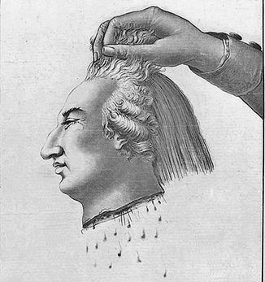

Palmarès des exécutions capitales : 1792-1810

| Date | Heure | Lieu | Nom | Crime | Exécution | Condamnation | 1792 : ? exécutions |
| Mercredi 25 avril 1792 |
15h30 | Paris Seine Place de Grève (Place de l'Hôtel-de-Ville) |
Nicolas "Jacques Pelletier" Le Peltier 34 ans, ? (21 avril 1758, Saint-Pierre-sur-Dives, 14) |
Le 14 octobre 1791, rue Bourbon-Villeneuve (actuelle rue d'Aboukir), blesse d'un coup de bâton à la tête Pierre François Maloigne, 29 ans, cultivateur de l'Oise en visite à Paris, pour lui voler 800 livres en assignats. Un complice, dont il ne donnera pas le nom, ne sera jamais retrouvé. Condamné à la pendaison. |
Exécuteur : Charles Henri Sanson (Paris) PREMIER GUILLOTINÉ DE L'HISTOIRE. Conduit en chemise rouge à l'échafaud, crie et insulte les juges qui l'ont condamné à mort. Exécution rapide et sans histoire, sous les yeux d'une foule dense qui trouve le spectacle trop rapide et donc décevant, et repart en manifestant son mécontentement. |
31 décembre 1791 (Deuxième tribunal criminel) 24 janvier 1792 (Troisième tribunal criminel) |
| Mardi 08 mai 1792 |
?h | Versailles Seine-et-Oise Place du Marché Notre-Dame |
Jacques Antoine Dubois 40 ans, journalier (?) |
Dans la nuit du 28 au 29 avril 1790, s'introduisent dans le presbytère de Vicq, et tuent d'un coup de coutre de charrue le curé François Ory pour lui voler son argent, son fusil et ses munitions, une montre et de l'argenterie, puis volé et maltraité la servante (violée ?), dévalisé, pillé et saccagé l'église. Condamnés en première instance à être roués à Montfort-l'Amaury. |
Exécuteur : ? (Versailles) La tête du second condamné n'est pas tranchée du premier coup. Le troisième admire l'instrument : "La belle invention ! Ces Jean-foutre là ne savent qu'imaginer ! Ah ça, Monsieur, la sacrée machine a manqué mon camarade, j'entends qu'elle ne me manque pas, ou mordieu ! Montrez-moi donc comment ça marche, car je n'en verrai plus !" Charles Sanson, venu superviser l'utilisation de la guillotine auprès de son frère Louis, exécuteur de Versailles, donne les explications requises, et finalement le condamné dit :"L'ami, graissez la coulisse ! Graissez-la, ça jouera mieux !" Le prêtre perd alors connaissance, et le condamné se moque de lui quand on va chercher du vinaigre pour le ranimer, et dit au bourreau : "Attendons qu'il revienne, et nous finirons notre affaire." On prie le curé de descendre de l'échafaud, puis le condamné, docile, se place sur la bascule : "Comment faut-il que je me mette ?" Une fois en position, salue l'assistance : "C'est bon. Adieu, mes amis ! Bon voyage !" |
24 août 1791 (?) 18 avril 1792 (?) |
| Jean-Louis "Laroze" Doulet 36 ans, garçon boucher () |
||||||
| Pierre François "Le bien-aimé" Langevin 36 ans, garçon charron () |
||||||
| Lundi 04 juin 1792 |
?h | Paris Seine Place de Grève (Place de l'Hôtel-de-Ville) |
Jean Murry ? ans, horloger (Avranches) |
Incarcérés à la Force - Houzel pour vol à l'étalage, condamné le 24 mai 1791 -, faux-monnayeurs, exposent de faux assignats fabriqués au sein même de l'hôtel de la Force. "Chevalier" Oudart et Deschanets, accusés de complicité, sont acquittés. |
Exécuteur : Charles Henri Sanson (Paris) Première exécution pour fausse monnaie, accomplie en quatre minutes. |
17 avril 1792 (Tribunal criminel) |
| Victor Daniel Houzel ? ans, garçon tapissier () |
||||||
| Vendredi 08 juin 1792 |
Paris Seine Place de Grève (Place de l'Hôtel-de-Ville) |
Pierre Séverin Hunout 28 ans, feudiste (vers Chaumont, 60) |
Faux-monnayeur, fabriqua des assignats dans les prisons du Châtelet. Accusés de complicité, François Orry et Jacques André Girardin sont acquittés. |
10 ou 18 avril 1792 (Tribunal criminel de Paris) |
||
| Vendredi 22 juin 1792 |
Paris Seine Place de Grève (Place de l'Hôtel-de-Ville) |
Jean Baptiste Guérin ? ans, marchand (Reims?, 51) |
Faux-monnayeur, exposition de faux assignats et exposition de faux écus. Son complice, Girardin, aubergiste à Meudon, est acquitté. |
25 avril 1792 (Tribunal criminel de Paris) |
||
| Samedi 30 juin 1792 |
16h30 | Dieppe Seine-Inférieure Place du Marché (Place Nationale) |
Pierre Henry 24 ans, matelot à bord de la Marie-Suzanne (?) |
Le 22 janvier 1792, au large du cap Beachy Head (Angleterre), blesse grièvement à coups de couteau au cours d'une mutinerie le capitaine Louineau afin de voler la marchandise de café, de sucre et de coton, et d'aller la revendre à Jersey. Maîtrisés par les trois autres membres de l'équipage et par le mousse. Son complice Bergede meurt durant l'instruction. |
Exécuteur : ? (?) Première exécution par guillotine en province. |
15 avril 1792 (?) |
| Lundi 09 juillet 1792 |
12h30 | Saint-Germain-en-Laye Seine-et-Oise Place du Marché |
Pierre Duval 33 ans, ? (?) |
Le 08 janvier 1792, pillent la sacristie de Chambourcy, puis attaquent et tentent de tuer Jean-Louis Fontaine fils sur la route de Mantes. Complice : Jacques Hay. |
Exécuteur : ? (Versailles) Duval fait des révélations de dernière minute. Exécution mentionnée dans une lettre de Tobias Schmidt le 03 août 1792, où il la situe une quinzaine de jours plus tôt. |
20 janvier 1792 (Tribunal de Saint-Germain) 28 mars 1792 (Tribunal de Montfort) |
| Pierre Picard 38 ans, () |
||||||
| Jeudi 12 juillet 1792 |
14h | Paris Seine Place de Grève (Place de l'Hôtel-de-Ville) |
Jacques Haas 27 ans, marchand d'argent (?) |
Le 23 octobre 1791 à l'aube au 212, rue Saint-Jacques, abat d'un coup de pistolet à bout portant son ami Louis Dubut pour lui voler son porte-feuille contenant 2000 livres environ. | Exécuteur : Charles Henri Sanson (Paris) |
29 octobre 1791 (?) 24 avril 1792 (?) |
| 16h | Claude Geoffroy 42 ans, ex-grand vicaire de Dijon () |
Ecrivain contre-révolutionnaires, faux-monnayeur, fabriqua des faux billets de 40 sous de la maison de Secours et des faux assignats de 5 livres. | 05 mai 1792 (Tribunal criminel) |
|||
| Vendredi 13 juillet 1792 |
Lille Nord Grand'Place |
Antoine Joseph Vasseur 35 ans, tailleur et sergent de la garde nationale (?) |
Assassine à coups de sabre le général Théobald Dillon, maréchal de camp de Lille, le 29 avril 1792. | Première exécution à Lille. | 18 mai 1792 (?) |
|
| Jeudi 26 juillet 1792 |
12h | Montfort-l'Amaury Seine-et-Oise ? |
Antoine Bouvier 33 ans, journalier (?) |
Au hameau de Houjarray, commune de Bazoches-sur-Guyonne. | 18 juillet 1792 (?) |
|
| Jeudi 26 juillet 1792 |
?h | Paris Seine Place de Grève (Place de l'Hôtel-de-Ville) |
Julien Harry ? ans, ? (?) |
Faux-monnayeurs, détenus à la Force, fabriquent de faux assignats de cinq, cinquante, deux cents et trois cents livres. | Exécuteur : Charles Henri Sanson (Paris) |
16 mai 1792 (Tribunal criminel) |
| Louis Darthuys ? ans, () |
||||||
| Samedi 28 juillet 1792 |
Aurillac Cantal ? |
Louis Prat 21 ans, cultivateur à la Besse Basse, commune de Saint-Julien-de-Toursac (?) |
Etrangla sa victime. | Première exécution par guillotine dans le Cantal. | 15 avril 1792 (?) |
|
| Mardi 07 août 1792 |
?h | Versailles Seine-et-Oise Place du Marché Notre-Dame |
Jacques "Petit" Duchesne 28 ans, marchand forain (?) |
Vol et assassinat du père Oury, curé de Vicq. | Exécuteur : Louis Sanson (Versailles) |
02 août 1792 (Tribunal criminel) |
| Jean-Baptiste David 22 ans, employé au Mont-de-Piété () |
? | 1792 (Tribunal criminel) |
||||
| Noël Lamy 31 ans, brocanteur à Paris () |
||||||
| Armand Forestier 31 ans, marchand d'argent () |
||||||
| Louis Toulloure 18 ans, ferblantier () |
||||||
| Samedi 18 août 1792 |
Paris Seine Place de Grève (Place de l'Hôtel-de-Ville) |
Jean Leclerc ? ans, garçon blanchisseur (?) |
Auteur d'attaques à main armée. | Devait être pendu le 21 juin 1791. Exécution reportée suite à la fuite du roi, Leclerc avait été oublié en prison, où il était tombé malade avant de recouvrir la santé. | 17 mai 1791 (?) |
|
| Mardi 21 août 1792 |
Versailles Seine-et-Oise Place du Marché Notre-Dame |
Jean Durand 29 ans, meunier (?) |
. | 16 août 1792 (?) |
||
| Mardi 21 août 1792 |
22h | Paris Seine Place de la Réunion (Place du Carrousel) |
Louis-David Collenot d'Angremont 44 ans, avocat, responsable du Bureau militaire des Gardes nationaux (vers 1748, Dijon?, 22) |
Accusé d'avoir, sur ordre du Roi, formé une coalition anti-révolutionnaires, notamment pour empêcher la prise des Tuileries. | Echafaud dressé devant la grande porte de la cour royale des Tuileries, éclairé de flambeaux, en présence d'une foule immense. Officiellement, première exécution politique de la Révolution française. |
21 août 1792 (Tribunal Révolutionnaire) |
| Vendredi 24 août 1792 |
17h30 | Paris Seine Place de la Réunion (Place du Carrousel) |
Arnaud de La Porte 54 ans, ancien ministre de la Marine, intendant de la liste civile depuis 1790 (14 octobre 1737, Versailles, 78) |
Participa aux combats du 10 août. | 24 août 1792 (Tribunal Révolutionnaire) |
|
| Samedi 25 août 1792 |
Lille Nord Grand'Place |
Jean-Philippe Joseph Duprez 57 ans, rentier, ancien maréchal-ferrant (?) |
Le 29 avril 1792, donne un coup de baïonnette dans le ventre du général Théobald Dillon, maréchal de camp de Lille. "Complice" de Vasseur? exécuté le 13 juillet. |
15 juin 1792 | ||
| Samedi 25 août 1792 |
21h | Paris Seine Place de la Réunion (Place du Carrousel) |
Pierre Barnabé Farmian Durosoy environ 47 ans, journaliste et homme de lettres (entre 1742-1745, Paris, 75) |
Participa aux combats du 10 août | 25 août 1792 (Tribunal Révolutionnaire) |
|
| Lundi 27 août 1792 |
?h | Paris Seine Place de Grève (Place de l'Hôtel-de-Ville) |
Benoît Sauvade 49 ans, prêtre, ancien chapelain de la Maison royale des Tuileries et fabricant de papier (14 juillet 1743, Ambert, 63) |
Faux-monnayeurs, ayant fabriqué des faux assignats à Passy. Un quatrième accusé, Dufour, est acquitté. |
Exécuteur : Charles Henri Sanson (Paris) En soulevant l'une des têtes pour la montrer au peuple, emporté par son élan et/ou glissant sur une éclaboussures de sang, Gabriel Sanson, fils puîné et aide de l'exécuteur, tombe de l'échafaud et se brise la nuque en heurtant le pavé. |
29 juin 1792 (Tribunal criminel de Paris) |
| Jean Blaise Vimal 37 ans, avocat et marchand de papier (25 décembre 1754, Ambert, 63) |
||||||
| Jean-François Hubert Guillot 43 ans, libraire (pê 03 novembre 1748, Verdun, 55) |
||||||
| Vendredi 31 août 1792 |
Orléans Loiret Place du Martroi |
Louis Duléry 48 ans, capitaine des fermes de la Charente-Inférieure (?) |
Embauchage envers la royauté. | Première exécution par guillotine dans le Loiret. | 30 août 1792 (Haute-Cour nationale) |
|
| Dimanche 02 septembre 1792 |
? | Paris Seine Place de la Réunion (Place du Carrousel) |
Jean Julien ? ans, charretier à Vaugirard (?) |
Condamné le 31 août à dix ans de gêne en tant que conspirateur du 10 août, lors de son exposition le 01 septembre en place de Grève, hurle : "Vive le roi, vive la Reine, au f... la nation !" | 02 septembre 1792 (Tribunal Révolutionnaire) |
Lundi 03 septembre 1792 |
Paris Seine Place de la Réunion (Place du Carrousel) |
Karl Josef Anton Leodegar von Bachmann 58 ans, garde suisse, attaché à la protection de Louis XVI (12 mars 1734, Näfels, GL) |
Son procès est interrompu par les révolutionnaires venus s'emparer des prisonniers pour procéder au "massacre de Septembre", mais les juges parviennent, par leur autorité, à leur refuser de se charger du sort de Bachmann, qui sera conduit indemne à l'échafaud. | 02 septembre 1792 (Tribunal Révolutionnaire) |
| Vendredi 07 septembre 1792 |
? | Melun Seine-et-Marne ? |
Etienne "Galapia" Ouri 41 ans, manouvrier (?) |
Le 03 octobre 1791, dans la forêt de Valence, armé d'un fusil et d'un gourdin, attaque M. de la Barre, juge de paix du canton du Châtelet, alors que celui-ci se rendait de Melun à Montereau, pour lui voler sa montre, sa bourse contenant quelques piécettes et un écu de six livres, un porte-feuille contenant un assignat de cinquante livres et environ 200 livres d'autres objets. Ses beaux-frères et complices, les frères Marinot, repris de justice notoires, soupçonnés, sont arrêtés le lendemain en possession de la montre, précédant de peu leur parent. Condamnés à être pendus en première instance. Au soir de leur deuxième condamnation, les trois condamnés s'évadent de la Conciergerie en compagnie de cinq autres prisonniers. Sort des Martinot inconnu. |
1791 (Tribunal de Melun) 06 janvier 1792 (Tribunal du 2e arrondissement de Paris, quartier Sainte-Geneviève) |
|
| Vendredi 07 septembre 1792 |
11h30 | Arcis-sur-Aube Aube Place du Marché |
Pierre Étienne Fleury 23 ans, tisserand (vers 1768, ?) |
Assassine le 24 février 1792 à Savières Jacques Villat, âgé d'environ 77 ans. | Première utilisation de la guillotine dans l'Aube. |
15 juin 1792 (Tribunal criminel de l'Aube) |
| Jeudi 20 septembre 1792 |
14h | Paris Seine Place de la Réunion (Place du Carrousel) |
Nicolas Roussel 49 ans, employé de la Régie, embauché par la police avant le 10 août 1792 (?) |
19 septembre 1792 (Tribunal Révolutionnaire) |
||
| Mardi 25 septembre 1792 |
19h | Paris Seine Place de la Réunion (Place du Carrousel) |
Jacques Cazotte 72 ans, ancien commissaire général de la marine, maire d'Epernay, écrivain (auteur du "Diable Amoureux") (07 octobre 1719, Dijon, 21) |
Rescapé des massacres de septembre, accusé d'avoir organisé la dissolution de l'Assemblée nationale, correspondu avec des émigrés, et complice de l'intendant Laporte, avoir planifié la fuite de Louis XVI en 1791 sous la protection des gardes Suisses. | Dit à ses compagnons savoir mériter la mort, et que même s'il jugeait la loi sévère, il la trouvait juste. Demande aux exécuteurs de lui couper les cheveux très courts et qu'on remette les mèches à sa fille, incarcérée dans une autre partie de la prison. Ecrit quelques lettres à sa famille. Sur l'échafaud, dit à la foule : "Je meurs comme j'ai vécu, fidèle à Dieu et à mon Roi." | 25 septembre 1792 (Tribunal Révolutionnaire) |
| Samedi 29 septembre 1792 |
Toulouse Haute-Garonne Place de la Liberté (Place du Capitole) |
Jean-Jacques de Castéra 22 ans, militaire (22 janvier 1770, Auch, 32) |
Conspiration. | Première utilisation de la guillotine à Toulouse. Echafaud dressé au nord-ouest de la place (entre le deuxième et le troisième banc de la place actuelle). |
1792 (?) |
|
| Vendredi 05 octobre 1792 |
?h | Dijon Côte-d'Or Place du Morimont (Place Émile-Zola) |
Antoine "Marrey" Larrey 27 ans, portefaix (?, 69) |
(CF P248) | Exécuteur : ? (Dijon) Première utilisation de la guillotine en Côte-d'Or. |
|
| Jean Chappe 33 ans, portefaix (?, 69) |
||||||
| François Barré 27 ans, valet (?, 01) |
||||||
| Vendredi 05 octobre 1792 |
Paris Seine Place de la Réunion (Place du Carrousel) |
Michel Englert 34 ans, ex-tailleur, gendarme (Berlinge, ?) |
Dans la nuit du 02 au 03 octobre 1792, rue Planche-Mibray, blesse mortellement d'un coup de sabre dans la poitrine Ambroise Marlet, menuisier et caporal dans la garde nationale. La victime et lui s'étaient querellés quelques instants plus tôt dans un café de la halle parce que Marlet y avait chanté La Carmagnole, ce que plusieurs gendarmes avaient trouvé insultant. |
05 octobre 1792 (?) |
||
| Lundi 08 octobre 1792 |
Aurillac Cantal ? |
Antoinette Rieux, épouse Ramondie 34 ans, ? (?) |
PARRICIDE. Empoisonna son père Etienne Rieux, 71 ans, à Fournoulès le 09 mai 1792. |
15 juin 1792 (Tribunal criminel du Cantal) |
||
| Mercredi 10 octobre 1792 |
Paris Seine Place de la Révolution (Place de la Concorde) |
Pierre Bardol 43 ans, rentier (?) |
Dans la nuit du 13 au 14 septembre 1792, sur les Champs-Elysées, poignarde son cousin par alliance, l'abbé Antoine Baduel, prêtre réfractaire en fuite, avant de lui défoncer le crâne à coups de marteau, pour le voler. | Exécuté sur les lieux de son crime. | 10 octobre 1792 | |
| octobre 1792 | Condom Gers ? |
Première utilisation de la guillotine dans le Gers ? A VERIFIER. | ||||
| Samedi 13 octobre 1792 |
Carhaix Finistère ? |
Pierre Auffret ? ans, ? (?) |
26 juin 1792 (Tribunal criminel du Finistère) |
|||
| Samedi 13 octobre 1792 |
Paris Seine Place de la Révolution (Place de la Concorde) |
Louis Lyre ? ans, ? (?) |
Receleur. Participa au vol du Garde-Meuble, le 10 et le 11 septembre 1792. Aaron Humbergue, Quentin-Louis Saugnier et Nannette Chardin sont acquittés. | 13 octobre 1792 | ||
| Dimanche 14 octobre 1792 |
Verdun Meuse Place Chevert |
Nicolas Louis Klopstein 46 ans, seigneur |
46 ans, seigneur de Récourt. Emigré dans l'armée de Condé, port d'armes contre la patrie et levée de contributions à la tête de troupes ennemies. | 1792 | ||
| Samedi 20 octobre 1792 |
Marseille Bouches-du-Rhône Plaine Saint-Michel (Place Jean-Jaurès) |
François Ripert ? ans, ? (Le Thor, 84) |
Assassin d'Anne Mathieu. | Première exécution à Marseille (et dans les Bouches-du-Rhône) ? | ||
| 23 octobre 1792 | Metz Moselle Place de l'Égalité (Place de la Comédie) |
Première exécution par guillotine en Moselle | ||||
| Mardi 23 octobre 1792 |
?h | Paris Seine Place de Grève (Place de l'Hôtel-de-Ville) |
Michel Ignace Dammartin Fontenoy ? (?,) |
Émigrés "pris les armes à la main". | Exécuteur : Charles Henri Sanson (Paris) Certaines sources disent que l'exécution aurait eu lieu place de la Réunion. |
22 octobre 1792 |
| Joseph Alexandre Dumesnil ? (?) |
||||||
| Jean-Louis Miranbel ? (?) |
||||||
| Jean Jacques Maurice Santon ? (?) |
||||||
| Etienne Hyacinthe Gauthier de la Touche ? (?) |
||||||
| Hyacinthe Amand Constant Honoré "Lessart" Godefroy ? (?) |
||||||
| Charles Hyacinthe Laurent Bernage-Scintillier ? (?) |
||||||
| Jean Béon ? (?) |
||||||
| Eméric Louis Charles Godefroi Mingré ? (?) |
||||||
| Mercredi 24 octobre 1792 |
? | Paris Seine Place de la Révolution (Place de la Concorde) |
Joseph "Lorrain" Picard ? ans, brocanteur (?) |
Picard participa au vol du Garde-Meuble entre le 11 et le 17 septembre 1792, Anne, sa maîtresse et complice, est condamnée pour le recel de deux petits canons d'or et d'argent, incrustés de diamants. François Denys, peintre en bâtiment, et Anne Paigue, veuve Simonnot, coiffeuse, sont acquittés. |
Exécuteur : Charles Henri Sanson (Paris) | 23 octobre 1792 (Tribunal Révolutionnaire) |
| Anne Leclerc ?, lingère-repasseuse (?) |
||||||
| Vendredi 26 octobre 1792 |
11h30 | ? Aube ? |
Sébastien Fleury ? ans, ? (?) |
Père et complice d'Etienne Fleury, exécuté en septembre à Arcis pour avoir assassiné le 24 février 1792 à Savières Jacques Villat, âgé d'environ 77 ans. | 16 octobre 1792 (?) |
|
| 29 octobre 1792 | h | Rennes Ille-et-Vilaine Place de la Mairie |
Charles Eliot ? () |
Conspiration monarchique et tentative d'embauchage de soldats. | Exécuteur : ? (Rennes) Première utilisation de la guillotine à Rennes. Le peuple, acquis à la cause des condamnés, se lamente sur son passage et supplie qu'on lui fasse grâce. Eliot s'adresse à la foule avant d'être basculté : "Adieu, citoyens de Rennes ! Que j'aie le plaisir de crier une dernière fois avec vous : "Vive la Nation !" " |
28 octobre 1792 () |
| René Maloeuvre ? ans, () |
||||||
| Jeudi 01 novembre 1792 |
Paris Seine Place de la Révolution (Place de la Concorde) |
Thomas-Laurent "Grandcon" Meyran ? ans, ? (?) |
01 novembre 1792 | |||
| Vendredi 02 novembre 1792 |
17h | Metz Moselle Place de l'Égalité (Place de la Comédie) |
Pierre François Chrétien Charles Étienne Busselot d'Andilly 28 ans, officier de dragons au régiment de Schomberg (14 mai 1764, Nancy, 54) |
Émigrés. | Exécuteur : ? (Metz) Echafaud monté à l'emplacement du bassin. La guillotine ne satisfait pas l'exécuteur, qui sollicite du conseil général - et obtient - le droit de procéder à des améliorations sur la machine. |
02 novembre 1792 (Commission militaire de Metz) |
| Philippe Joseph Maire ? ans, () |
||||||
| Jeudi 08 novembre 1792 |
Paris Seine Place de la Révolution (Place de la Concorde) |
Claude-Melchior "Le Petit Chasseur" Cottet ? ans, ? (?) |
08 novembre 1792 | |||
| Mercredi 21 novembre 1792 |
18h30 | Caen Calvados Place Saint-Sauveur |
Thomas Delorme ? (?) |
Exécuteur : ? (Caen) Première utilisation de la guillotine dans le Calvados. |
19 novembre 1792 (?) |
|
| Ursule Colin, épouse Delorme (?) |
||||||
| Mercredi 28 novembre 1792 |
11h | Bourg Ain ? |
Pierre Daquis 22 ans, soldat au 4e régiment des chasseurs à cheval (vers 1770, Vaux-en-Bugey?, 01) |
Le 24 juin 1792 à Neuville, assassine de dix-sept coups de sabre Aimé, domestique à Sobley, pour lui voler quatre assignats de cinq livres. | Première utilisation de la guillotine dans l'Ain. | 18 juillet 1792 (Tribunal criminel de l'Ain) |
| 28 novembre 1792 | Toulouse Haute-Garonne Place de la Liberté (Place du Capitole) |
F Castelbon de Naé ?, ? (?) |
Faux-monnayeur, fabriqua de faux assignats. | |||
| Lundi 24 décembre 1792 |
15h30 | Barbezieux Charente ? |
Jean Colin 32 ans, cultivateur (?) |
Empoisonna dans la nuit du 18 au 19 mai 1792 sa belle-mère Suzanne Géneuil aux Grands Poulards. | Mentionné comme "condamné à mort" sur l'acte-civil de décès. Première utilisation de la guillotine en Charente. |
1792 |
| Jeudi 27 décembre 1792 |
? | Carcassonne Aude Place aux Herbes (Place Carnot) |
Jean Chanard ? ans, jardinier à Villemoustaussou (?) |
Accusés d'avoir, le 17 août 1792, participé à l'assassinat du procureur général Verdier lors d'une révolte pcontre la hausse du prix du pain. | Exécuteur : ? (Carcassonne) Première utilisation de la guillotine dans l'Aude. |
18 ou 22 décembre 1792 (?) |
| François "Paillasse" Boyer ? ans, jardinier à Marseillette (?) |
||||||
| Jeanne "La noire" Establet, veuve Dufis 56 ans, servante (vers 1736, Caux, 11) |
1793 : ? exécutions Le Tribunal criminel extraordinaire est créé par le décret du 10 mars. Entré en fonctions le 29 du même mois, il siège pour la première fois le 06 avril. Le décret du 29 octobre 1793 (08 brumaire an 2) change officiellement son nom en Tribunal révolutionnaire. |
|||||
| Mercredi 09 janvier 1793 |
14h | Auxerre Yonne Place des Fontaines (Place Charles-Surugue) |
Louis Pierre Breuillé 34 ans, manoeuvre, tonnelier (13 février 1758, Levis, 89) |
Faux-monnayeur, fabriqua trois assignats de cinq livres. | Première utilisation de la guillotine dans l'Yonne. | 20 juillet 1792 (Tribunal criminel de l'Yonne) |
| 16 janvier 1793 | Toulon Var Place d'Armes |
Antoine Figon 36 ans, tailleur de pierres, directeur du jury d'accusation du Tribunal Criminel (?) |
Militant révolutionnaire au comportement trop exagéré au goût des Jacobins. | Première exécution par guillotine dans le Var. | 15 janvier 1793 | |
| Lundi 21 janvier 1793 |
10h22 | Paris Seine Place de la Révolution (Place de la Concorde) |
Louis XVI né Louis-Auguste de France, dit "Louis Capet" 38 ans, roi de France (1774-1791), puis roi des Français (1791-1792) (23 août 1754, Versailles, 78) |
Accusé de complot contre la République. | Exécuteur : Charles Henri Sanson (Paris) |
17 janvier 1793 (Convention nationale) |
| Vendredi 25 janvier 1793 |
Paris Seine Place de Grève (Place de l'Hôtel-de-Ville) |
Alexis Louis Roger 31 ans, marchand de draps (vers 1761, Paris, 75) |
Faux assignats. | . | 16 novembre 1792 (Tribunal criminel de la Seine) |
|
| Mardi 29 janvier 1793 |
Toulouse Haute-Garonne Place de la Liberté (Place du Capitole) |
André Conte ?, ? (?) |
Assassinat. | |||
| Vendredi 01 février 1793 |
11h | Nantua Ain ? |
Thomas Brunet Denis 44 ans, cabaretier (28 décembre 1748, Champdor, 01) |
Assassine le 05 juillet 1972 Jean Nicolas Konne, 45 ans, huissier à Ceyzérieu, pour lui voler sept assignats de cinq livres. | 17 septembre 1792 (Tribunal criminel de l'Ain) |
|
| Samedi 09 février 1793 |
12h30 | Gournay Seine-Inférieure |
Pierre Lyon ?, marchand (?) |
Auteurs d'un quadruple assassinat dans une auberge du hameau des Carreaux près de Gournay. Louis Fossard, condamné à mort, meurt à la prison de Rouen le 06 février. Edier, Beaufils, Copin, Royer, Leblanc et Bourdain sont acquittés. |
20 octobre 1792 (Tribunal criminel de la Seine-Inférieure) |
|
| Pierre Torchy ? ans, marchand d'oeufs (?) |
||||||
| François Moulin ? ans, courtier en chevaux () |
||||||
| Mercredi 13 février 1793 |
? | Le Puy Haute-Loire Place du Martouret |
Pierre Layes 50 ans, maréchal-ferrant (23 décembre 1742, Les Vastres, 43) |
Faux-monnayeurs aux Vastres, fabriquent des faux assignats de cinq livres et des pièces de trente sous. Jeanne-Marie Layes, soeur des deux hommes, est acquittée. |
Première utilisation de la guillotine dans la Haute-Loire. | 1792 (Tribunal criminel de la Haute-Loire) |
| Jean Pierre Layes 48 ans, fabricant de couteaux (14 mars 1744, Les Vastres, 43) |
||||||
| Marguerite Charra, épouse Layes ? ans, ? (?, Saint-Voy, 43) |
||||||
| Jeudi 14 février 1793 |
Vesoul Haute-Saône ? |
Pierre Davoux ? ans, soldat volontaire au 2e bataillon de Seine-et-Oise (Monfort-l'Amaury, 78) |
Tua un voyageur étranger sur la route près de Port-sur-Saône. | Première utilisation de la guillotine dans la Haute-Saône. | 18 janvier 1793 (Tribunal criminel de la Haute-Saône) |
|
| Samedi 16 février 1793 |
?h | Paris Seine Place de Grève (Place de l'Hôtel-de-Ville) |
Antoine "Willaume" Viallat 39 ans, menuisier (?) |
Faux assignats. | Exécuteur : Charles Henri Sanson (Paris) |
décembre 1792 (Tribunal criminel de la Seine) |
| ?h | Michel Thellier 45 ans, marchand de bois () |
Faux assignats. | 15 décembre 1792 (Tribunal criminel de la Seine) |
|||
| Samedi 02 mars 1793 |
Paris Seine Place de Grève (Place de l'Hôtel-de-Ville) |
Pierre Poulet ? ans, fripier (?) |
Faux assignats. | . | 20 décembre 1792 (Tribunal criminel de la Seine) |
|
| Mercredi 06 mars 1793 |
Ervy Aube ? |
Joseph Rillot 38 ans, loueur de chevaux (?) |
Assomme mortellement à coups de marteau à taillant le 29 novembre 1792 à Villery M.Mouillefarine, 73 ans, ancien vitrier, pour lui dérober 360 livres en assignats. | 21 décembre 1792 (Tribunal criminel de l'Aube) |
||
| Mercredi 13 mars 1793 |
Nantes Loire-Inférieure Place de la Révolution (Place du Bouffay) |
Gabriel Musset 42 ans, laboureur (17 juillet 1750, Saint-Même, 44) |
Révolté de la région de Machecoul. | 13 mars 1793 (?) |
||
| Mercredi 20 mars 1793 |
Quimper Finistère Plateau de la Déesse (Place de la Résistance/Champ de Bataille) |
Alain Nédélec 38 ans, ? (?) |
. | |||
| 24 mars 1793 | Paris ? | André François Bukals | ||||
| Mercredi 27 mars 1793 |
Paris Seine Place de Grève (Place de l'Hôtel-de-Ville) |
Jean Durand 52 ans, peintre (Chantezon ?) |
Faux-monnayeur, fabricant de faux assignats de cinq livres. | 21 janvier 1793 (Tribunal criminel de la Seine) |
Vendredi 29 mars 1793 |
15h, 16h45 | Pontivy Morbihan Place du Martray |
Grégoire Gigourel, Jean Leanic, Mathurin Quinques, Jean Jossin, Guillaume Le Bostan, Yves Le Moing, Jacques Le Tellier, Jean Le Moulec et Jean Le Bauquer | Première exécution par guillotine dans le Morbihan. |
| Vendredi 29 mars 1793 |
20h30 | Poitiers Vienne Place du Pilori (Place de la Liberté) |
Jean-Baptiste Cuirblanc et Georges Fontmervault | 28 mars 1793 | Samedi 30 mars 1793 |
18h, 19h | Pontivy Morbihan Place du Martray |
Yves Le Galvihan, Guillaume Le Braire et René Guigan |
| Samedi 30 mars 1793 |
Rodez Aveyron Place du Bourg |
François Boudou | Refusa d'être recruté. | Premier guillotiné dans l'Aveyron ? Absence d'acte d'état-civil. |
||
| Vendredi 05 avril 1793 |
Poitiers Vienne Place du Pilori (Place de la Liberté) |
Pierre-Antoine Vincent | Cultivateur à Lusignan, auteur de propos contre-révolutionnaires. | avril 1793 | ||
| Samedi 06 avril 1793 |
9h | Les Sables d'Olonne Vendée Dune (Promenade Wilson) |
Jean Arnaud, Jean Molé, Jacques Chanson, Louis Robin, René Favreau, André Thomazeau, Pierre Touzeau, François Quéreau, André "Pontoizeau" Chévrier, Pierre Jannet, Pierre Daniel et Jean Tarraud | 18 ans, maréchal-ferrant, 27 ans, farinier, 25 ans, sans profession, 23 ans, tisserand, 29 ans, sellier, 38 ans, fermier, 25 ans, laboureur, 44 ans, sans profession, ? ans, marchand volailler, 23 ans, sans profession, 23 ans, sans profession et 28 ans, tisserand. | L'échafaud est dressé sur une entre jetée et remblai actuels, à l'emplacement approximatif du Centre des Congrès Les Atlantes. | |
| Samedi 06 avril 1793 |
20h30 | Paris Seine Place de la Réunion (Place du Carrousel) |
Louis "Dumollans" Guiot 43 ans, écuyer, seigneur de Lunesse et de Molans (23 octobre 1749, Alloue, 16) |
Enrôlement dans l'armée des émigrés, lui-même émigré, rentré en France du 09 au 12 décembre 1792, avec une corcarde blanche. | Ou place de la Révolution ? | 06 avril 1793 (Tribunal révolutionnaire) |
| Jeudi 11 avril 1793 |
11h | Paris Seine Place de la Maison-Commune (Place de l'Hôtel-de-Ville) |
Nicolas Luthier 42 ans, grenadier au régiment du roi (12 janvier 1751, Saint-Dizier, 52) |
Prisonnier de guerre revenu en France sans lettre d'échange, tente le 31 mars 1793 d'inciter au retour de la monarchie en France au coin de la rue de la Huchette. | 10 avril 1793 (Tribunal révolutionnaire) |
|
| Jeudi 11 avril 1793 |
?h | Toulouse Haute-Garonne Place de la Liberté (Place du Capitole) |
Bernier ? (?,) |
Émigrés "pris les armes à la main". | 1793 | |
| Bernier ? (?) |
||||||
| Vendredi 12 avril 1793 |
Brest Finistère Place du triomphe du Peuple (Place du Château) |
Lamarche | Ancien évêque de Saint-Pol-de-Léon. | A VERIFIER !!! | ||
| Samedi 13 avril 1793 |
Saint-Brieuc Côtes-du-Nord |
François Pincemin et Louis Cornillet | 42 ans, laboureur et 41 ans, laboureur, et officier municipal de Saint-Aaron. Membres d'un mouvement de chouannerie rassemblé en mars 1793 à Meslin. | Première exécution par guillotine dans les Côtes-du-Nord. | 12 avril 1793 | |
| Lundi 15 avril 1793 |
16h | Paris Seine Place de la Réunion (Place du Carrousel) |
Philippe François Rouxel de Blanchelande 58 ans, général de brigade, ex-gouverneur de Saint-Domingue (21 février 1735, Dijon, 21) |
15 avril 1793 (Tribunal révolutionnaire) |
||
| Vendredi 19 avril 1793 |
13h | Paris Seine Place de la Réunion (Place du Carrousel) |
Jeanne-Catherine Clerc 55 ans, domestique (vers 1738, Valenciennes, 59) |
Tient à plusieurs reprises dans les cafés de Paris des propos contre-révolutionnaires, ainsi qu'au corps de garde de Saint-Firmin dans la nuit du 07 au 08 mars 1793. | 18 avril 1793 (Tribunal criminel extraordinaire) |
|
| Vendredi 19 avril 1793 |
16h | Les Sables d'Olonne Vendée Dune (Promenade Wilson) |
Gabriel Perthuzé, Jean Rousseau, Jean Barreau, Noël Brisard, Jacques Laprée, Jacques Boucard, Louis Fruchard, Jacques Maroilleau, François Lachaise, François Birotheau | 41 ans, chirurgien, 19 ans, domestique, 31 ans, domestique, 26 ans, laboureur, 21 ans, domestique, 31 ans, maçon, 49 ans, maire de Vairé, 22 ans, agriculteur, 43 ans, maçon, 21 ans, maréchal-ferrant. | ||
| Samedi 20 avril 1793 |
11h | Les Sables d'Olonne Vendée Dune (Promenade Wilson) |
Joseph Perrocheau, Pierre Guérin, Jacques Rivallin, Prosper Angibaud, François "Morinière" Angibaud, Denis Bourgeois, Joseph Brochet, Jacques Rabelot, Pierre Ocharelle, Jean Bardon, Jean Bouteillé, François Poiraud, Pierre Mineau, Abraham Barreau, Nicolas Guittonneau, Louis Grolier et François Martineau | 34 ans, maçon, 22 ans, laboureur, 51 ans, marchand, 35 ans, juge de paix, 41 ans, sans profession, 38 ans, douanier, 34 ans, jardinier, 38 ans, maire de Notre-Dame-de-Riez, 34 ans, laboureur, 30 ans, laboureur, 32 ans, marchand, 34 ans, domestique, 55 ans, sans profession, 37 ans, voiturier, 51 ans, marchand, 21 ans, laboureur, 40 ans, journalier. | ||
| Samedi 20 avril 1793 |
12h30 | Paris Seine Place de la Réunion (Place du Carrousel) |
Anne-Hyacinthe de Vaujour 47 ans, colonel au 3e régiment des dragons (?) |
A tenu des propos contre-révolutionnaires incitant à la révolte, au meurtre et à l'incendie pour rétablir la monarchie. | 19 avril 1793 (Tribunal criminel extraordinaire) |
|
| Dimanche 21 avril 1793 |
12h | Paris Seine Place de la Réunion (Place du Carrousel) |
Antoine Jean "Saint-André" Clinchamp 47 ans, prêtre, ancien prieur de Clisson (?, Montbrison/Montbizot, 72) |
Auteur d'un pamphlet anti-révolutionnaire incitant au rétablissement de la monarchie. | Exécuteur : Charles Henri Sanson (Paris) | 20 avril 1793 (Tribunal criminel extraordinaire) |
| 13h | Gabriel Duguigny 30 ans, lieutenant de vaisseau (vers 1763, Nantes, 44) |
Emigré, revenu en France sous un faux nom en novembre-décembre 1792. | 20 avril 1793 (Tribunal criminel extraordinaire) |
|||
| Lundi 22 avril 1793 |
10h | Les Sables d'Olonne Vendée Dune (Promenade Wilson) |
Louis Coutanceau, Louis Boureau, Jean "Poulin" Grondin, Jean Gautreau, Jean-Baptiste Simonneau et Pierre Meunier | 29 ans, laboureur, 37 ans, charpentier, 42 ans, farinier, 22 ans, laboureur, 40 ans, marchand et 34 ans, tourneur. | ||
| Mardi 23 avril 1793 |
16h | Les Sables d'Olonne Vendée Dune (Promenade Wilson) |
Jacques Toublaud, André Poissonnet, Charles Boizard et Augustin Gouineau | 37 ans, farinier, 54 ans, marchand, 40 ans, tisserand, 23 ans, tisserand. | ||
| Jeudi 25 avril 1793 |
10h30 | Niort Deux-Sèvres ? |
Pierre Chamarre et Louis Bellotron | 27 janvier 1793 (Tribunal criminel des Deux-Sèvres) |
||
| Vendredi 26 avril 1793 |
Paris Seine Place de Grève (Place de l'Hôtel-de-Ville) |
Alexandre François Deschanets 28 ans, brocanteur (?) |
Faux-monnayeur, fabriqua de faux assignats de 50 livres. Son complice François Renaud, condamné à mort, sera exécuté le lendemain ? Marie-Anne Laurent est acquittée. |
. | 16 janvier 1793 (Tribunal criminel de la Seine) |
|
| Samedi 27 avril 1793 |
15h | Les Sables d'Olonne Vendée Dune (Promenade Wilson) |
Pierre Guyon, Pierre Geneviès, Henriette-Aimée Baudry, André-Ephraïm Cavois, Gabriel René "De la Vaiquière" Baudry et Etienne Robin | 44 ans, marin, 46 ans, préposé aux douanes, 44 ans, noble, 39 ans, officier municipal, 56 ans, sans profession, 42 ans, sans profession. | ||
| Samedi 27 avril 1793 |
Paris Seine Place de Grève (Place de l'Hôtel-de-Ville) |
François "Barthélémy" Renault Marie-Madeleine Martin, épouse Petitpas |
30 ans, né à Moulins. Faux assignats. 26 ans, revendeuse, née à Versailles. |
. | 16 janvier 1793 17 janvier 1793 |
|
| Dimanche 28 avril 1793 |
Paris Seine Place de la Réunion (Place du Carrousel) |
François Boucher Désiré Charles Mingot |
38 ans, dentiste, né à Ménil Eude. 21 ans, cocher, né à Paris |
27 avril 1793 27 avril 1793 |
||
| Dimanche 28 avril 1793 |
Poitiers Vienne Place du Pilori (Place de la Liberté) |
Jacques Jouineau, René Brugier, Philippe Sauvage, Jean Lavena et Pierre Anché | 28 avril 1793 | |||
| Jeudi 02 mai 1793 |
11h | Paris Seine Place de la Réunion (Place du Carrousel) |
Antoine Jusseau | 01 mai 1793 | ||
| Samedi 04 mai 1793 |
12h | Paris Seine Place de la Réunion (Place du Carrousel) |
François Auguste Renaud de Beauvoir, comte de Mazu, Pierre-Paul Colli et Jean-Nicolas Bréard | 34 ans, officier de cavalerie, né à Constantinople, 53 ans, ancien fermier général, né à Paris, 54 ans, commissaire de marine, né à Rochefort | 03 mai 1793 | |
| Mercredi 08 mai 1793 |
18h | Pont-Audemer Eure ? |
Louis Pourpoint 43 ans, domestique de meunier à Appeville-Annebault (?) |
Le 25 avril 1793 à Appeville, cria publiquement "La Nation est imbécile d'avoir fait exécuter le Roi. Vive le Roi !" en état d'ivresse. L'homme était connu pour son intempérance et sa tendance à dire n'importe quoi sous l'empire de l'alcool. |
Exécuteur : ? (?) | 04 mai 1793 (Tribunal criminel de l'Eure, siégeant exceptionnellement à Pont-Audemer) |
| 19h | Antoine Ducastel 50 ans, conducteur de bestiaux (?) |
Vagabond, le 1er mai 1793, à Routot, alors qu'on le contrôle et qu'il n'a pas de papiers à présenter aux gardes nationaux, affirme qu'il ne connaît que la loi du roi et qu'il espère le rétablissement de la monarchie. | 05 mai 1793 (Tribunal criminel de l'Eure, siégeant exceptionnellement à Pont-Audemer) |
|||
| 10 mai 1793 | Vendredi, 11h |
Paris Seine Place de la Réunion (Place du Carrousel) |
Rivier de Mauny et Beaulieu | Avaient envoyé de l'argent à des parents émigrés | Les députés de la Convention, se rendant ce jour-là pour la première fois en leurs nouveaux locaux de la salle des Manèges donnant sur le lieu d'exécution, décident le jour-même de faire déplacer ce dernier sur la place de la Révolution, mesure appliquée à partir du 17 mai. | |
| 11 mai 1793 | 11h | Agen Lot-et-Garonne Place du Marché (Place des Laitiers) |
François Rives-Moustier | Emigré | 10 mai 1793 | |
| 11 mai 1793 | Montauban Lot Place Nationale |
Jean Cladel 38 ans, ? (?) |
Participe à une émeute à Villebourbon. | Exécuté avec la guillotine de Cahors, arrivée la veille. Crie "Vive le Roi !" avant d'être basculé. | ||
| 11 mai 1793 | Valence Drôme |
Marc-Antoine Cartier | ||||
| 12 mai 1793 | Dimanche, 15h |
Les Sables d'Olonne Vendée Dune (Promenade Wilson) |
René-Louis Rorthais de la Savarière, Jacques Charrier, Pierre Renou, Charles "L'Herbaudière" Mourain, Jacques Guittonneau, Jean Delaroze, Honoré "Joussemin" Tessier, | 74 ans, noble, 46 ans, laboureur, 38 ans, marchand, 59 ans, ancien maire de Noirmoutier, 26 ans, fermier, 30 ans, laboureur, ? ans, marchand, 31 ans, chirurgien, 59 ans, notaire, 58 ans, notaire et 26 ans, sans profession. | ||
| 14 mai 1793 | Mardi, |
Mauriac Cantal |
François Filiol | 29 ans, abbé, prêtre réfractaire. | ||
| 18 mai 1793 | 15h | Les Sables d'Olonne Vendée Dune (Promenade Wilson) |
Suzanne Poictevin, épouse de La Rochefoucauld et Alexandre Desniot | 78 ans, noble, 41 ans, laboureur. | ||
| 20 mai 1793 | 9h | Thiers Puy-de-Dôme Place des Barres (Place Antonin-Chastel) |
Augustin Desormières, Jean Goutte-Gate, Pierre Poyet, Gilbert Bourgade et François Chouvel | Échafaud dressé au bout de la rue des Barres, face à l'hôtel de ville. | 19 mai 1793 | |
| 21 mai 1793 | Les Sables d'Olonne Vendée Dune (Promenade Wilson) |
Jacques Roquand et Jean Grivet | 60 ans, laboureur et 40 ans, tisserand. | |||
| Mercredi 22 mai 1793 |
12h | Paris Seine Place de la Révolution (Place de la Concorde) |
Joseph Miaczinski | |||
| 23 mai 1793 | Jeudi, 11h |
Paris | Philippe Devaux | Exécuté place de la Révolution | ||
| 24 mai 1793 | Les Sables d'Olonne Vendée Dune (Promenade Wilson) |
René Guilbaud | 22 ans, domestique. | |||
| 02 ou 03 juin 1793 | Florac Lozère Cimetière de Florac, à côté de l'église Saint-Martin (?) |
40 contre-révolutionnaires | 02 juin 1793 | |||
| Dimanche 09 juin 1793 |
?h | Paris Seine Place de Grève (Place de l'Hôtel-de-Ville) |
Jean-François Bocquillon () |
Faux-monnayeurs. Antoine Oriot, condamné à mort, est libéré. Augustine Connétable, épouse Lucien, connaît un sursis de plusieurs mois, et sera exécutée le 09 novembre. |
Exécuteur : Charles Henri Sanson (Paris) |
24 janvier 1793 (Tribunal criminel de la Seine) |
| Christophe Connétable () |
||||||
| Jacques Louis Dersily () |
||||||
| Charles François Geoffroy () |
||||||
| Jean Lucien () |
||||||
| Pierre Lavigne () |
||||||
| Mardi 11 juin 1793 |
21h | Paris Seine Place de la Révolution (Place de la Concorde) |
Louis Béguiner 36 ans, tapissier (vers 1757, Paris, 75) |
Enrôlé dans la 2e compagnie de la section du Museum pour combattre les Vendéens, tente d'inciter plusieurs autres soldats à rallier les rangs ennemis. | 11 juin 1793 (Tribunal Révolutionnaire) |
|
| 13 juin 1793 | Langres Haute-Marne Place du Marché (Place de l'Hôtel-de-Ville) |
Nicolas Blanchard et Hubert Rossignol | Le premier était un prêtre réfractaire, le second un contre-révolutionnaire | 12 juin 1793 (Tribunal criminel de la Haute-Marne, siégeant à Langres) |
||
| 15 juin 1793 | Samedi, |
Saint-Flour Cantal |
Jean Fabre, Vanel et Prouzet | Tailleur d'habits, curé de Taillac (Haute-Loire) et ancien curé de Florac, membres de l'insurrection royaliste de Lozère. | Peut-être exécutés le 15 pour Fabre et le 16 pour les prêtres. A vérifier. | 14 juin 1792 |
| 17 juin 1793 | Paris Seine Place de Grève (Place de l'Hôtel-de-Ville) |
Bonne Carrère, veuve Collet Louis-Henri Duperray |
47 ans, journalière. Faux assignats. 27 ans, chirurgien. Faux assignats. |
. | 25 avril 1793 20 mai 1793 |
|
| 18 juin 1793 | Mardi, 14h30 |
Paris | Joseph Gabriel François de la Motte la Guiomarais, Marie-Jeanne Micault, épouse de la Motte la Guiomarais, Elie Victor Alexandre "La Chauvenais" Thébault, Michel Julien Alain Picot-Lemoëlan, Angélique Françoise Desilles, épouse Delclos la Fauchais, Guillaume Maurice Delaunay, Félix Victor Locquet de Grandville, Nicolas Bernard Grout de la Motte, Thérèse Moelien de Fougères, Jean-Baptiste Georges "Le Petit" Fontevieux, Louis Anne Pontavice et Georges Julien Jean Vincent | 50 ans, gentilhomme, 50 ans, noble, 22 ans, instituteur, 59 ans, gentilhomme, 24 ans, noble, 57 ans, Lieutenant-Général de l'Amirauté, 34 ans, gentilhomme, 50 ans, capitaine de vaisseau, 30 ans, fille d'un conseiller du Parlement de Bretagne, 34 ans, officier au régiment des Chasseurs du Gévaudan, ? ans, officier au régiment d'Armagnac et 48 ans, courtier et traducteur d'anglais. Complot et conspiration contre l'Etat pour causer une guerre civile en Bretagne. François Perrin, jardinier et Joseph Marie le Masson, chirurgien, sont condamnés à être déportés en Guyane. Treize autres accusés sont acquittés, mais malgré tout enfermés à Sainte-Pélagie. | 13 minutes pour toutes les exécutions. | 17 juin 1793 |
| 19 juin 1793 | Mercredi, |
Paris Seine Place de Grève (Place de l'Hôtel-de-Ville) |
Jean-François Belleroze | 31 ans, cordonnier. Trafiquant de faux assignats | . | 19 mai 1793 |
| 12 juillet 1793 | Vendredi, |
Paris | François Benoît Couët, Joseph Hypolite Adrien Buissot, Jean-Henri Cellet Duviviet, Jacques Nicolas Jacuet, Jean-Baptiste Poussot, Jean-Baptiste Quesnel, Charles-Philippe Nonneville, Pierre-Auguste Charles Tassin Montcourt et Jacques Broue de la Salle | 12 juillet 1793 | ||
| 14 juillet 1793 | Dimanche, |
Paris Seine Place de Grève (Place de l'Hôtel-de-Ville) |
François Guyot | 36 ans, brocanteur. Faux assignats | . | 17 avril 1793 |
| 15 juillet 1793 | Lyon Rhône Place des Terreaux |
Joseph Chalier | Chef révolutionnaire de Lyon. | Première exécution à Lyon. Le couperet, manié par des mains néophytes, dut tomber trois fois, et le bourreau dut achever la décollation au couteau. | 15 juillet 1793 | |
| Mercredi 17 juillet 1793 |
16h | Paris Seine Place de la Révolution (Place de la Concorde) |
Marie Anne Charlotte de Corday d'Armont 24 ans, (27 juillet 1768, Ligneries, 61) |
Le 13 juillet 1793, au 20, rue des Cordeliers, poignarde d'un coup de couteau de cuisine dans la poitrine Jean-Paul Marat, 50 ans, médecin et député révolutionnaire de la Seine, dont elle considérait les propos - notamment sa réjouissance publique lors des massacres de septembre - comme extrémistes et mensongers. | Exécuteur : Charles Henri Sanson (Paris) |
17 juillet 1793 (Tribunal révolutionnaire) |
| Louis Charles Malherbe 20 ans, (Caen, 14) |
Emigré en 1792, revenu en France en janvier 1793, achète une fausse carte civique et un certificat de civisme. Arrière-petit-fils du poète Malherbe. François Antoine Legros, peintre qui lui avait vendu les faux focuments, est condamné à huit ans de fers et à six heures d'exposition. CERTAINS DOCUMENTS DISENT QU'IL FUT CONDAMNE LE 20 JUILLET ET EXECUTE LE LENDEMAIN. A VERIFIER. |
1? juillet 1793 (Tribunal révolutionnaire) |
||||
| Mercredi 17 juillet 1793 |
Paris Seine Place de Grève (Place de l'Hôtel-de-Ville) |
Jean-Baptiste Moreau 29 ans, boulanger (?) |
Dans la nuit du 14 au 15 décembre 1792, sous le premier guichet du Louvre, en compagnie de complices, attaquent M.Eve, cherchant à l'étrangler pour le voler. Les cris poussés par la victime alertant passant et Garde nationale, les brigands s'enfuient : seul Moreau est capturé. |
. | 20 mai 1793 (Tribunal criminel de Paris) |
|
| 20 juillet 1793 | Samedi, |
Paris Seine Place de Grève (Place de l'Hôtel-de-Ville) |
Etienne (sans autre nom) | 30 ans, tailleur. Faux assignats. | . | 16 mai 1793 |
| 22 juillet 1793 | Lyon Rhône Place des Terreaux |
Ryard de Beauvernois | ||||
| 23 juillet 1793 | Mardi, 20h |
Paris | Joseph Mazelier | 23 juillet 1793 | ||
| 25 juillet 1793 | Jeudi, |
Paris | François Charles Cocquereau Boisbernier | 64 ans, gentilhomme. | 24 juillet 1793 | |
| 25 juillet 1793 | 14h30 | Cherbourg Manche Rue de l'Abbaye |
Jacques Christophe Gilbert 50 ans environ, ancien fontainier du Roi () |
Faux-monnayeur, fabriqua de faux assignats. | Première utilisation de la guillotine dans la Manche. | 19 mai 1793 (Tribunal criminel de la Manche) |
| 29 juillet 1793 | Toulouse Haute-Garonne Place de la Liberté (Place du Capitole) |
Limargues | Meurtre | |||
| 01 août 1793 | Jeudi, 19h |
Paris | Pierre Maurice Colinet de la Salle-Chonville | 01 août 1793 | ||
| 03 août 1793 | Samedi, 10h |
Paris | Jean-Baptiste Claude Tourtier | 02 août 1793 | ||
| 04 août 1793 | Dimanche, 12h |
Paris | Pierre Joseph Lavigne | 68 ans. Faux assignats. | . | 24 janvier 1793 |
| 07 août 1793 | Mercredi, |
Paris | André Jonas | 32 ans, gendarme. | 07 août 1793 | |
| 12 août 1793 | Saumur Maine-et-Loire Place de la Bilange |
Pierre Lebrun ? ans, lieutenant à la 1ere compagnie du Bataillon de la Réunion (?) |
Désertion et vol. | 12 août 1793 (Commission militaire de Saumur) |
||
| 13 août 1793 | Toulouse Haute-Garonne Place de la Liberté (Place du Capitole) |
Christian Pinaux | Embauchage. | |||
| 14 août 1793 | Mercredi, 20h |
Paris | Charles Joseph Lescuyer | 49 ans, maréchal de camp. | 14 août 1793 | |
| 27 août 1793 | Mardi, |
Paris | Antoine Bordier et Louis Wallon Amand Jules Brémont, Laurent Charles Meaux Saint-Marc et Jean Dominique Roquille-Lieutard Jean-François Heurtaux |
40 ans, carrier et 42 ans, chirurgien. Assassinat. 35 ans, entrepreneur, 36 ans, négociant et 37 ans, homme de lettres. Faux assignats. 29 ans, charron. Assassinat. |
. | 25 juin 1793 05 juin 1793 16 août 1793 |
| 28 août 1793 | Toulouse Haute-Garonne Place de la Liberté (Place du Capitole) |
Ducros | Entreposeur de tabacs. | |||
| 28 août 1793 | Mercredi, 10h15 |
Paris | Adam Philippe Custine | Général. | 27 août 1793 | |
| 31 août 1793 | Marseille Bouches-du-Rhône |
Mignonat et Laugier | ||||
| 04 septembre 1793 | Mercredi, |
Paris | Claude Laurent | 19 ans, cavalier. Assassinat. | . | 23 mai 1793 |
| 06 septembre 1793 | Vendredi, 13h |
Paris | François Boltins, Pierre Delalonde, Jacques Eudeline, Jean-Baptiste "Lachambre" Henry, Joseph François Maubert, Aubin Mérimé et deux autres | 21 ans, menuisier, 22 ans, domestique, 32 ans, domestique, 18 ans, tailleur, 18 ans, domestique, 34 ans, cocher et ? et ?. Condamnés de Rouen. | 05 septembre 1793 | |
| 07 septembre 1793 | Samedi, 11h |
Paris | Jacques Constant Tonduty la Balmaudière | 42 ans, lieutenant. | 06 septembre 1793 | |
| 11 septembre 1793 | Paris | Jacques Cauvet | 31 ans, cuisinier. Faux assignats. | . | 16 juin 1793 | |
| 11 septembre 1793 | Mercredi, |
Paris | Jean-Charles Bain | 40 ans, huissier. | ||
| 13 septembre 1793 | Paris ? Nevers ? | Claude François Berger | 13 septembre 1793 | |||
| 14 septembre 1793 | Pau Basses-Pyrénées Place de la Révolution (Place Gramont) |
Pierre Dauboux | 50 ans, prêtre réfractaire et émigré. | |||
| 14 septembre 1793 | Marseille Bouches-du-Rhône |
Pinatel et Sard | ||||
| 16 septembre 1793 | Marseille Bouches-du-Rhône |
Rousselet et Lefranc | ||||
| 17 septembre 1793 | Marseille Bouches-du-Rhône |
Francoult et Bouquier | ||||
| 19 septembre 1793 | Uzerche Corrèze Grand Place (Place de la Libération) |
Pierre "Piarrissou" (ou Picharou) Besse | 65 ans (?), mendiant. Dénoncé comme contre-révolutionnaire | Première exécution en Corrèze. Le bourreau dut faire tomber quatre fois le couperet, sans succès. Son épouse coupa le reste avec un couteau de boucher. |
||
| 19 septembre 1793 | Paris | François Mottier et François Binet | 47 ans, marchand forain et 25 ans, ?. Faux assignats. | . | 18 septembre 1793 | |
| 19 septembre 1793 | Paris | Louis Lévêque et Antoine Soyer | 58 ans, président de l'élection à Mortain et 50 ans, ramoneur. | |||
| 19 septembre 1793 | Marseille Bouches-du-Rhône |
Dupay et Galibardy | ||||
| 20 septembre 1793 | Les Sables d'Olonne Vendée Dune (Promenade Wilson) |
Etienne Benjamin Viaud et René Bourasseau | 31 ans, marin, 56 ans, maréchal-ferrant et ancien procureur de la commune. | |||
| 23 septembre 1793 | Paris | Antoine Masson et Louis René Merrel | 41 ans, curé, 47 ans, fermier. | |||
| 24 septembre 1793 | Paris | Antoine Masson, Louise Angélique Catherine Ricart et Louis René Merrel | 41 ans, curé, 56 ans, ?, 47 ans, fermier. | |||
| Mercredi 25 septembre 1793 |
16h | Auch Gers Place de la Liberté (Place de la Libération) |
François Caupenne | Prêtre réfractaire. | Echafaud monté à l'angle nord-est de la place, soit approximativement au niveau de la rue Gambetta. | 24 septembre 1793 |
| 28 septembre 1793 | Samedi, 12h |
Nemours Seine-et-Marne |
Jean-Joseph Lebocq | Environ 30 ans. | 26 juillet 1793 | |
| 30 septembre 1793 | Toulouse Haute-Garonne Place de la Liberté (Place du Capitole) |
Pierre Hazera | Prédicateur. | |||
| 02 octobre 1793 | Les Sables d'Olonne Vendée Dune (Promenade Wilson) |
Antoine d'Angély et Jean Ratouis | 59 ans, chevalier de Saint-Louis, 54 ans, laboureur. | |||
| 02 octobre 1793 | Mercredi, |
Paris | Louis Liou | 35 ans, brocanteur. Faux assignats. | 01 octobre 1793 (Tribunal criminel de la Seine) |
|
| 03 octobre 1793 | Aix Bouches-du-Rhône Rond-point de la Rotonde |
Joseph-François Bertet et Pierre Mériaud | Première exécution par guillotine à Aix. | |||
| 04 octobre 1793 | 19h30 | Neufchâtel-en-Bray Seine-Inférieure ? |
Jacques René Chapelain ? ans, receveur des droits d'enregistrement royaux (?) |
Propos contre-révolutionnaires, tenus au cabaret du hameau du Quesnay, à Saint-Saëns. Camarade de tablée, Félix Varengue, qui prend sa défense, est condamné à vingt ans de fers et à l'exposition six heures durant. |
Echafaud dressé entre les halles et l'église Notre-Dame. | |
| 07 octobre 1793 (16 vendémiaire an 2) |
Lundi, |
Paris | Antoine-Joseph Gorsas | 41 ans, journaliste, député de Seine-et-Oise. | Premier Conventionnel guillotiné. | 07 octobre 1793 (16 vendémiaire an 2) |
| 07 octobre 1793 (16 vendémiaire an 2) |
Lundi, 11h |
Avignon Vaucluse Place de la Révolution (Place de l'Horloge) |
Siffrein François Gay | Dominicain. Condamné pour émigration. | Première utilisation de la guillotine dans le Vaucluse. Machine prêtée par le Gard, échafaud dressé au centre de la place. |
06 octobre 1793 (15 vendémiaire an 2) |
| 10 octobre 1793 (19 vendémiaire an 2) |
Jeudi, 10h |
Avignon Vaucluse Place de la Révolution (Place de l'Horloge) |
Joseph Dominique Didier de Millaudon-Coudurier, Pierre Joseph Hugues et François Morénas | Ancien trésorier du pape, homme de loi, prêtre. | 09 octobre 1793 (18 vendémiaire an 2) |
|
| 13 octobre 1793 | Aix Bouches-du-Rhône |
Jean Rey | ||||
| Mercredi 16 octobre 1793 (25 vendémiaire an 2) |
12h15 | Paris Seine Place de la Révolution (Place de la Concorde) |
Maria Antonia "Marie-Antoinette d'Autriche" Josepha Johanna von Habsburg-Lothringen, dite "Veuve Capet" 37 ans, reine de France de 1774 à 1791, reine des Français de 1791 à 1792 (02 novembre 1755, Wien, Autriche) |
Accusée de complot contre la République. | 16 octobre 1793 (25 vendémiaire an 2) (Tribunal Révolutionnaire) |
|
| 17 octobre 1793 (ou 17 septembre ?) | Toulouse Haute-Garonne Place de la Liberté (Place du Capitole) |
J.J.F.P Bordes | Etudiant, royaliste. | |||
| 18 octobre 1793 (27 vendémiaire an 2) |
Paris | Jean-Baptiste Niclau et Joachim Pichelin | 31 ans, grenadier et 36 ans, grenadier. | () |
||
| 19 octobre 1793 (28 vendémiaire an 2) |
Paris | Paul François Joseph Clarine, Pellerin Guy Soire, Pierre François Malingre et Antoine François Joseph Delettre | 62 ans, chapelain, 53 ans, ?, 56 ans, marchand bonnetier, 54 ans, marchand. | () |
||
| 22 ou 23 octobre 1793 | Mont-de-Marsan Landes Place de la Liberté ( |
Cabiro | Curé de Samadet, prêtre réfractaire. | |||
| Mercredi 23 octobre 1793 (02 brumaire an 2) |
12h | Pontoise Seine-et-Oise ? |
Pierre François Bourèche 26 ans, maçon (?) |
Assassinat. | 19 octobre 1793 (28 vendémiaire an 2) |
|
| 23 octobre 1793 (02 brumaire an 2) |
Paris | Jean Brûlé, Pierre Hippolyte Pastourel | 32 ans, curé, 43 ans, curé | () |
||
| 25 octobre 1793 (04 brumaire an 2) |
Paris | Pierre Claude Janson et Rémy Martin | 20 ans, canonnier et ? ans, officier municipal | () |
||
| 25 octobre 1793 (04 brumaire an 2) |
Vendredi, 16h |
Avignon Vaucluse Place de la Révolution (Place de l'Horloge) |
Jean-Joseph Florant et Ambroise Bomenelle | 24 octobre 1793 (03 brumaire an 2) |
||
| 26 octobre 1793 | Paris | Charles-Marie Jeanton | 25 ans, artilleur. Assassinat. | . | 18 octobre 1793 | |
| Samedi 26 octobre 1793 |
?h | Paris Seine Place Saint-Michel |
Pierre Degoulle 29 ans, taillandier (Aurillac, 15) |
Assassinat. | Exécuteur : Charles Henri Sanson (Paris) Conduits à l'échafaud le visage voilé de noir, à la grande protestation des spectateurs qui veulent les identifier. |
16 août 1793 (Tribunal criminel de la Seine) |
| Pietro "Pierre" Giledi 38 ans, taillandier (Florence, Italie) |
||||||
| Jean-Baptiste Maillard 40 ans, marchand forain (Dieville) |
||||||
| Louis Richard 25 ans, brocanteur (Viteuse ?) |
||||||
| Michel Sciellé 32 ans, soldat au régiment des Piques (Fontenoy-le-Couvet?) |
||||||
| Pierre "Tourangeau" Tussaut 35 ans, églaneur (Joué) |
||||||
| Joseph Pelletier 43 ans, marchand de vin () |
||||||
| Pierre Vincard ? () |
||||||
| Michel Fecitre () |
||||||
| 27 octobre 1793 (06 brumaire an 2) |
Dimanche, 16h |
Avignon Vaucluse Place de la Révolution (Place de l'Horloge) |
Jean Agricol Lamadieu | 26 octobre 1793 (05 brumaire an 2) |
||
| 27 octobre 1793 (06 brumaire an 2) |
Guéret Creuse Place de la Liberté (Place Bonnyaud) |
Valéry Dargier de Saint-Vaury | Baron. | |||
| 27 octobre 1793 (06 brumaire an 2) |
Paris | Louis Antoine Laroche | Grand vicaire. | () |
||
| 28 octobre 1793 | Mont-Adour (Saint-Sever) Landes Place de la Liberté (Place du Tour du Sol) |
Jean-Pierre Nautery | Curé de Castendet et de Maurrin. | |||
| 29 octobre 1793 | Mont-de-Marsan Landes |
Dominique Cabiro | Vicaire de Samadet. | |||
| 30 octobre 1793 (09 brumaire an 2) |
Auch Gers Place de la Liberté (Place de la Libération) |
Pierre Laffargue ? ans, cultivateur à Saint-Sauvy |
Assassin de son beau-père Blaise Lasserre. | 16 octobre 1793 (25 vendémiaire an 2) (Tribunal criminel du Gers) |
||
| 30 octobre 1793 | Toulouse Haute-Garonne Place de la Liberté (Place du Capitole) |
Azam | ||||
| 30 octobre 1793 (09 brumaire an 2) |
Paris | Jean Joseph Saunier | 38 ans, prêtre | () |
||
| 30 octobre 1793 | 23h30 | Laon Aisne ? |
Antoine de Vassaux 17 ans, ? |
Emigré. | Première exécution par guillotine dans l'Aisne. La machine, montée à la va-vite, ne fonctionne pas correctement, et la décapitation n'est effective qu'à la troisième chute du couperet. Le bourreau est pourchassé par la foule hurlante jusque dans une maison voisine d'où il s'échappe par les toits ; il est arrêté le lendemain, de même que ses aides, et incarcéré quelques jours, avant d'être libéré pour se livrer à un apprentissage de la guillotine sur des moutons, avec l'ordre de tester à chaque jour d'exécution la machine sur deux moutons réquisitionnés chez les bouchers de la commune. |
30 octobre 1793 (Tribunal criminel de l'Aisne) |
| Jeudi 31 octobre 1793 (10 brumaire an 2) |
12h25/ 13h08 |
Paris Seine Place de la Révolution (Place de la Concorde) |
Charles Alexis "Marquis de Sillery" Brûlart de Genlis 56 ans, maréchal de camp, député de la Somme (20 janvier 1737, Paris, 75) |
Députés dits "Brissotins" (plus tard surnommés les "Girondins", accusés de fédéralisme et de trahison envers la République. Charles Eleonor Dufriche-Valazé, 42 ans, avocat, administrateur et député de l'Orne, condamné à mort avec eux, se poignarde mortellement au coeur lors du prononcé du verdict. |
Exécuteur : Charles Henri Sanson (Paris) Exécutés en quarante-trois minutes. |
30 octobre 1793 (09 brumaire an 2) (Tribunal Révolutionnaire) |
| Claude François Fauchet 49 ans, évêque constitutionnel, député du Calvados (22 septembre 1744, Dornes, 58) |
||||||
| Jean Louis Carra 51 ans, journaliste, député de la Saône-et-Loire (09 mars 1742, Pont-de-Veyle, 01) |
||||||
| Claude Romain Lauze de Perret 46 ans, avocat, propriétaire terrien, député des Bouches-du-Rhône (28 février 1747, Apt, 84) |
||||||
| Benoît Lesterpt-Beauvais 43 ans, avocat, député de la Haute-Vienne (22 août 1750, Le Dorat, 87) |
||||||
| Jacques Lacaze 41 ans, négociant, député de la Gironde (04 juin 1752, Libourne, 33) |
||||||
| Jacques Boilleau d'Ausson 42 ans, avocat, député de l'Yonne (25 mai 1751, Avallon, 89) |
||||||
| Charles Louis Antiboul 41 ans, avocat, député du Var (20 mai 1752, Saint-Tropez, 83) |
||||||
| Jean François Martin Gardien 38 ans, avocat, député d'Indre-et-Loire (09 janvier 1755, Château-Renault, 37) |
||||||
| Marc David Alba Lasource 30 ans, pasteur, député du Tarn (22 janvier 1763, Anglès, 81) |
||||||
| Jacques Pierre Brissot de Warville 39 ans, écrivain, député d'Eure-et-Loir (15 janvier 1754, Chartres, 28) |
||||||
| Pierre Lehardy 35 ans, médecin, député du Morbihan (10 février 1758, Dinan, 22) |
||||||
| Jean Duprat 32 ans, marchand de soies, député des Bouches-du-Rhône (22 décembre 1760, Avignon, 84) |
||||||
| Jean François Ducos 28 ans, négociant, député de la Gironde (10 mars 1765, Bordeaux, 33) |
||||||
| Jean Baptiste Armand Gensonné 35 ans, avocat, député de la Gironde (10 août 1758, Bordeaux, 33) |
||||||
| Jacques Paul Agricol Minvielle 29 ans, négociant en soieries, député suppléant des Bouches-du-Rhône (06 septembre 1764, Avignon, 84) |
||||||
| Jean-Baptiste Boyer-Fonfrède 32 ans, négociant, député de la Gironde et ancien président de la Convention (05 décembre 1760, Bordeaux, 33) |
||||||
| Gaspard Séverin Duchastel 27 ans, ancien chef de légion des gardes nationaux, député des Deux-Sèvres (23 février 1766, Cersay, 79) |
||||||
| Pierre Victurnien Vergniaud 40 ans, avocat, député de la Gironde et plusieurs fois président de l'Assemblée législative et de la Convention (31 mai 1753, Limoges, 87) |
||||||
| Louis François Sébastien Vigée 38 ans, procureur-syndic, député du Maine-et-Loire, ancien membre de la Commission des Douze (07 juillet 1755, Les Rosiers-sur-Loire, 49) |
||||||
| 31 octobre 1793 | Toulouse Haute-Garonne Place de la Liberté (Place du Capitole) |
Joseph Roudier | ||||
| 02 novembre 1793 (12 brumaire an 2) |
Paris | André Deschamps, Gabriel Vornaselle, Jean Simon La Combe Puygueraud et Guillaume Le Moine | 44 ans, horloger, 43 ans, 35 ans et 37 ans, administrateurs de la Gironde. | () |
||
| 02 novembre 1793 (12 brumaire an 2) |
Paris | Pierre Gondouin 37 ans, marchand de chevaux (?) |
Faux assignats. | 11 octobre 1793? () |
||
| Dimanche 03 novembre 1793 (13 brumaire an 2) |
Paris Seine Place de la Révolution (Place de la Concorde) |
Marie Olympe "de Gouges" Gouze 45 ans, femme de lettres (07 mai 1748, Montauban, 82) |
Féministe, opposante à la politique de Robespierre | S'écrie sur l'échafaud : "Enfants de la patrie, vous vengerez ma mort !" | 02 novembre 1793 (12 brumaire an 2) |
|
| 03 novembre 1793 (13 brumaire an 2) |
Dimanche, 9h |
Avignon Vaucluse Place de la Révolution (Place de l'Horloge) |
Joseph Abel Brunet | 02 novembre 1793 (12 brumaire an 2) |
||
| 04 novembre 1793 (14 brumaire an 2) |
Paris | Marie Madeleine Coutelet et Adam Lux | 32 ans, imprimeur, 27 ans, député. | () |
||
| 05 novembre 1793 (15 brumaire an 2) |
Paris | Marie Françoise Joséphine Derabec | 35 ans. | () |
||
| 06 novembre 1793 (16 brumaire an 2) |
Mercredi, 12h |
Paris | Anne Pierre Coustard de Massi | 52 ans, lieutenant, ancien mousquetaire, député de la Loire-Inférieure à la Convention, partisan des Girondins. | 05 novembre 1793 (15 brumaire an 2) |
|
| 06 novembre 1793 (16 brumaire an 2) |
Mercredi, 14h |
Les Sables d'Olonne Vendée Dune (Promenade Wilson) |
Jacques Jousseaume | 52 ans, tisserand. | ||
| 06 novembre 1793 (16 brumaire an 2) |
Mercredi, 17h45 |
Paris | Jacques Nicolas de Laroque Pierre Gondier Antoine "Languedouin" Brousse Jean Lepage Louis-Philippe Joseph "Philippe Égalité" d'Orléans |
73 ans, subdélégué de Mortain. 36 ans, courtier en change. ? 36 ans, couvreur. 46 ans, député de la Seine à la Convention, prince de sang : cousin de Louis XVI, vota pour la mort de celui-ci. Conspiration contre la souveraineté nationale et l'indivisibilité de la République. |
05 novembre 1793 (15 brumaire an 2) 05 novembre 1793 (15 brumaire an 2) 06 novembre 1793 (16 brumaire an 2) 06 novembre 1793 (16 brumaire an 2) 06 novembre 1793 (16 brumaire an 2) |
|
| 07 novembre 1793 (17 brumaire an 2) |
Jeudi, |
Paris | René Rideau, Jean Clain, Julien Cailleau, Jean Teynière, Florent Ollivier et Thomas Herry | maçon, menuisier, tonnelier, sabotier, cultivateur, journalier. Officiers municipaux au Pont-de-Cé, accusés d'intelligence avec les Vendéens. | 07 novembre 1793 (17 brumaire an 2) |
|
| 07 novembre 1793 | Paris | Jacques Hairon | Faux assignats | . | 16 octobre 1793 | |
| 08 novembre 1793 (18 brumaire an 2) |
Vendredi, 17h |
Paris | Simon François Lamarche Jeanne-Marie "Manon" Philipon, épouse Roland de la Platière |
39 ans, ancien directeur-général de la fabrication des assignats. Accusé d'avoir participé à un complot destiné à causer une guerre civile et s'étant soldée par la fusillade du 10 août 1792. 39 ans, salonnière, épouse de l'ancien ministre de l'Intérieur, accusée d'avoir organisé chez elle des réunions des députés Girondins à des fins de conspiration contre la République. |
Devant la terreur ressentie par Lamarche, Mme Roland lui cède son tour : "Je ne peux que vous épargner l'horreur de voir couler mon sang. Allez le premier, mon pauvre Monsieur." Sanson proteste, car il a des ordres - les condamnées doivent être suppliciées les premières -, mais elle lui répond en souriant : "Je suis certaine qu'on ne vous a pas donné l'ordre de refuser à une femme sa dernière prière ?" En grimpant à son tour sur l'échafaud, fixe la statue de la Liberté et s'exclame : "Liberté, que de crimes on commet en ton nom !" Elle fait une révérence à la statue, puis se laisse basculer. | 08 novembre 1793 (18 brumaire an 2) 08 novembre 1793 (18 brumaire an 2) |
| 09 novembre 1793 (19 brumaire an 2) |
?h | Paris Seine Place de Grève (Place de l'Hôtel-de-Ville) |
Marguerite Tingry, épouse Monval 33 ans, limonadière (?) |
Faux assignats. | Exécuteur : Charles Henri Sanson (Paris) |
15 janvier 1793 (Tribunal criminel) |
| Madeleine Vignereuil, épouse Lebrun 32 ans, ? () |
||||||
| Augustine Madeleine Connétable, veuve Lucien ? () |
Faux assignats. Complice de sept autres faux-monnayeurs, dont six - parmi lesquels son époux - avaient été exécutés en juin 1793. |
24 janvier 1793 (Tribunal criminel) |
||||
| Victoire Girard 22 ans, fruitière () |
Assassinat. | 02 mars 1793 (Tribunal criminel) |
||||
| Marguerite Lefranc 38 ans, blanchisseuse () |
Assassinat. | 10 octobre 1793 (Tribunal criminel) |
||||
| 09 novembre 1793 (19 brumaire an 2) |
Samedi, 16h |
Avignon Vaucluse Place du Palais |
Claude Joseph Bertrand | 08 novembre 1793 (18 brumaire an 2) |
||
| Lundi 11 novembre 1793 (21 brumaire an 2) |
Paris Seine Champ de Mars |
Jean Sylvain Bailly 57 ans, astronome, premier maire de Paris (1789-1791) et premier président de l'Assemblée constituante (15 janvier 1736, Paris, 75) |
Accusé d'avoir donné l'ordre, le 17 juillet 1791, à la Garde nationale de tirer sur les émeutiers réunis sur le Champ-de-Mars, et d'avoir pris la défense de Marie-Antoinette lors de son procès en refusant de témoigner contre elle. | Echafaud dressé sur les "lieux du crime", sur le côté gauche du champ de la Fédération, dans le fossé qui entoure l'enceinte, (au niveau de l'actuel 2, avenue de la Bourdonnais ; une plaque commémorative rappelle ce détail au passant). Fut presque lynché sur le chemin de son exécution. Devant l'échafaud, pris d'un frisson, est interpellé par un spectateur : "Tu trembles, Bailly ?" A cela, il répond : "Oui, mais c'est de froid." |
10 novembre 1793 (20 brumaire an 2) |
|
| 12 novembre 1793 (22 brumaire an 2) |
Mardi, |
Paris | Louis Grippière et Nicolas Poisot | 43 ans, marchand de tabac et 26 ans, gendarme. Distributeurs de faux assignats. | Exécutés place de la Révolution ? | 11 novembre 1793 (21 brumaire an 2) |
| 12 novembre 1793 (22 brumaire an 2) |
Mardi, |
Paris Seine Place de la Révolution (Place de la Concorde) |
Frédéric Kalb Nicolas Jean Roy Henry Louis Duchesne |
Officier, désertion avec sa troupe. Domestique, ayant proféré des paroles pour rétablir la royauté. 58 ans, intendant. |
11 novembre 1793 (21 brumaire an 2) |
|
| 13 novembre 1793 (23 brumaire an 2) |
Mercredi, 16h |
Toulouse Haute-Garonne Place de la Liberté (Place du Capitole) |
Pierre Lestrade | 51 ans, boucher à Loubers. | 13 novembre 1793 (23 brumaire an 2) |
|
| 13 novembre 1793 (23 brumaire an 2) |
Mercredi, |
Paris Seine Place de la Révolution (Place de la Concorde) |
Marie Chasles, veuve de Fontaine-Mervé Henri-Louis Duchesne Louis Dodet Bertrand Poirier |
62 ans, conspiratrice. Intendant de la maison de madame Adélaïde, contre-révolutionnaire. 36 ans, valet de chambre, conspirateur. 67 ans, homme de loi, s'opposa au départ des volontaires de Chinon, et auteur de pamphlets contre-révolutionnaires. |
12 novembre 1793 (22 brumaire an 2) |
|
| Jeudi 14 novembre 1793 (24 brumaire an 2) |
Tarbes Hautes-Pyrénées Place de la Fédération (Place Marcadieu) |
Salvat Jourretche | 28 ans, prêtre réfractaire du diocèse de Bayonne. | 12 novembre 1793 (22 brumaire an 2) |
||
| 15 novembre 1793 (25 brumaire an 2) |
Vendredi, |
Paris Seine Place de la Révolution (Place de la Concorde) |
Louis Pierre Manuel Gaspard Jean Baptiste de Brunet |
40 ans, député. 59 ans, général de division. |
Manuel se débat durant la toilette et hurle jusqu'à la chute du couperet, Brunet meurt avec beaucoup de courage et de fermeté. | 14 novembre 1793 (24 brumaire an 2) |
| 16 novembre 1793 (26 brumaire an 2) |
Samedi, |
Paris Seine Place de la Révolution (Place de la Concorde) |
Gabriel de Cussy Pierre-Paul Gilbert de Voisins, marquis de Villennes Nicolas-Jean Houchard |
54 ans, 44 ans. 53 ans, commandant général de l'armée de la Moselle. |
15 novembre 1793 (25 brumaire an 2) |
|
| 17 novembre 1793 (27 brumaire an 2) |
Dimanche, |
Paris | Jean-Baptiste Clavaux | 24 ans, officier au 6e régiment de chasseurs à cheval, faussaire en assignats. | Exécuté place de la Révolution. | 16 novembre 1793 (26 brumaire an 2) |
| 18 novembre 1793 (28 brumaire an 2) |
Lundi, |
Paris Seine Place de la Révolution (Place de la Concorde) |
Nicolas Rémi Lesueur François "Saint-Prix" Prix |
? 42 ans, recruteur, invalide, incitait à la révolte royaliste. |
Pendant qu'on le guillotinait, on exécuta son chien de Prix à coups de gourdin : le maître avait affirmé sa préférence de l'ancien régime au nouveau, le chien avait mordu un envoyé républicain | 17 novembre 1793 (27 brumaire an 2) |
| 19 novembre 1793 (29 brumaire an 2) |
Mardi, |
Paris Seine Place de la Révolution (Place de la Concorde) |
Pierre Charles Duparc Destar de Bellecour |
67 ans, inspecteur du château des Tuileries. Accusé d'avoir participé au complot pour inciter à la guerre civile et d'avoir provoqué la mort de nombreux insurgés le 10 août 1792. |
18 novembre 1793 (28 brumaire an 2) |
19 novembre 1793 (29 brumaire an 2) |
Auch Gers Place de la Liberté (Place de la Libération) |
François Daguzan | Tua sa femme Jeanne Bergougné | 18 novembre 1793 (28 brumaire an 2) |
| 21 novembre 1793 (01 frimaire an 2) |
Jeudi, |
Paris | Colombier | 20 novembre 1793 (30 brumaire an 2) |
||
| 22 novembre 1793 (02 frimaire an 2) |
Vendredi, |
Paris Seine Place de la Révolution (Place de la Concorde) |
Gabriel Nicolas François Boisguyon Jean-Marie Girey-Duprey |
35 ans, adjudant général. 24 ans, garde de la Bibliothèque. |
||
| 23 novembre 1793 (03 frimaire an 2) |
Feurs Loire |
|||||
| 24 novembre 1793 (04 frimaire an 2) |
Dimanche, |
Paris Seine Place de la Révolution (Place de la Concorde) |
Antoine Colnelle de Tontel Clément Charles François Laverdy |
70 ans, contrôleur général. |
23 novembre 1793 (03 frimaire an 2) |
|
| 25 novembre 1793 (05 frimaire an 2) |
Bayonne Basses-Pyrénées |
Charles d'Helbronn | Vicaire capucin d'Anglet. | |||
| 26 novembre 1793 (06 frimaire an 2) |
Mardi, |
Paris Seine Place de la Révolution (Place de la Concorde) |
Jacques Nicolas Cartereau Desormeaux | 54 ans, marchand de savon. Emigré. | 25 novembre 1793 (05 frimaire an 2) |
|
| 27 novembre 1793 (07 frimaire an 2) |
Mercredi, |
Paris Seine Place de la Révolution (Place de la Concorde) |
Antoine Nicolas Collier de La Marlière | 47 ans, général de division de l'armée du Nord. | 25 novembre 1793 (05 frimaire an 2) |
|
| 28 novembre 1793 (08 frimaire an 2) |
Jeudi, |
Rochefort Charente-Inférieure |
Jean Brelay, Louis Guérit, Etienne Marie Varenne, Jacques Campet, Michel Mage, Claude Bordeaux, Joseph Crassous, Henri Marizy et Antoine Daure | 28 novembre 1793 (08 frimaire an 2) |
||
| 29 novembre 1793 (09 frimaire an 2) |
Vendredi, |
Paris Seine Place de la Révolution (Place de la Concorde) |
Marie-Thérèse Vervitch et Anselme Vervitch Benoît Grandel Marguerite-Louis François Duport-Dutertre Antoine Pierre Joseph Marie Barnave |
Institutrice, curé. ? 39 ans, avocat, ancien ministre de la Justice. 32 ans, avocat, député de Grenoble aux Etats généraux, ancien maire de Grenoble. |
Marie-Thérèse meurt terrorisée, Grandel pleure. En regardant le couperet, Barnave soupire : "Voilà ce qui va récompenser les services que j'ai rendus à la Liberté..." | 28 novembre 1793 (08 frimaire an 2) |
| 30 novembre 1793 (10 frimaire an 2) |
Samedi, |
Paris Seine Place de la Révolution (Place de la Concorde) |
Louise-Madeleine Barentin, épouse Quatresous de Marolles, Gédéon Alexandre Quatresous de Marolles et Charles-Nicolas Quatresous de Marolles Louis Aubert de Fligny Augustin Philibert de Chassey Jean-Antoine Rebourg Augustin Lieuttot Jean Baptiste Charles Cagnies Jean Pierre Lebas |
29 novembre 1793 (09 frimaire an 2) |
||
| 01 décembre 1793 (11 frimaire an 2) |
Dimanche, |
Paris Seine Place de la Révolution (Place de la Concorde) |
Jean Vincenot Pierre Nicolas Aubry Sébastien Mauduit |
30 novembre 1793 (10 frimaire an 2) |
||
| 02 décembre 1793 (12 frimaire an 2) |
Lundi, |
Paris Seine Place de la Révolution (Place de la Concorde) |
Barthélémy Soudre Guillaume Jean Flamant |
01 décembre 1793 (11 frimaire an 2) |
||
| 03 décembre 1793 (13 frimaire an 2) |
Mardi, |
Paris Seine Place de la Révolution (Place de la Concorde) |
Antoine Pierre Léon Dufresne et Etienne Pierre Garneau | 02 décembre 1793 (12 frimaire an 2) |
||
| 03 décembre 1793 (13 frimaire an 2) |
Mardi, 10h |
Avignon Vaucluse Place de la Révolution (Place de l'Horloge) |
François Ribas, Jérôme Maurice Durand et Jean Belhomme | 02 décembre 1793 (12 frimaire an 2) |
||
| 05 décembre 1793 (15 frimaire an 2) |
Jeudi, |
Paris Seine Place de la Révolution (Place de la Concorde) |
Armand Guy Simon de Kersaint Jean-Baptiste Guérin |
04 décembre 1793 (14 frimaire an 2) |
||
| 06 décembre 1793 (16 frimaire an 2) |
Vendredi, |
Paris Seine Place de la Révolution (Place de la Concorde) |
Jacques Auguste Rassay Louis Marguerite Bernard d'Escourt Charlotte Félicité Lappé, épouse Charry Rabaud-Saint-Etienne |
05 décembre 1793 (15 frimaire an 2) |
||
| Vendredi 06 décembre 1793 (16 frimaire an 2) |
15h | Grasse Alpes-Maritimes Cours (Square du Clavecin) |
Antoine Ricard | 22 ans, maréchal-ferrant. | 09 novembre 1793 (19 brumaire an 2) |
|
| 06 décembre 1793 (16 frimaire an 2) |
Vendredi, 10h |
Périgueux Dordogne ? |
"Valadi" Izarn | |||
| 07 décembre 1793 | Toulouse Haute-Garonne Place de la Liberté (Place du Capitole) |
Villaret et Telleuris | ||||
| Samedi 07 décembre 1793 (17 frimaire an 2) |
Grasse Alpes-Maritimes Cours (Square du Clavecin) |
Honoré Trabaud | Cordonnier. | 07 décembre 1793 (17 frimaire an 2) |
Samedi, |
Paris Seine Place de Grève (Place de l'Hôtel-de-Ville) |
Philibert Bonnardot Joseph Bruniot |
Falsificateur d'assignats. Condamné par le tribunal criminel. Falsificateur d'assignats. Condamné par le tribunal criminel. |
07 décembre 1793 (17 frimaire an 2) 06 décembre 1793 (16 frimaire an 2) |
| décembre 1793 | Rodez Aveyron Place du Bourg |
Desmazes et Durand | Prêtres réfractaires | |||
| 08 décembre 1793 (18 frimaire an 2) |
Lyon Rhône Place des Terreaux |
Huit condamnés | ||||
| 08 décembre 1793 (18 frimaire an 2) |
Dimanche, |
Paris | Jean-Baptiste Noël, Jeanne Bécu-de Vaubernier, épouse comte du Barry, Jean-Baptiste Vandenyver, Edmé Jean-Baptiste Vandenyver et Antoine-Augustin Vandenyver | 65 ans, député, 50 ans, ex-favorite de Louis XV, 66 ans, 32 ans et 29 ans, banquiers. Intelligence avec l'ennemi. | 07 décembre 1793 (17 frimaire an 2) |
|
| 09 décembre 1793 (19 frimaire an 2) |
Lyon Rhône Place des Terreaux |
Treize condamnés | ||||
| 13 décembre 1793 (23 frimaire an 2) |
Vendredi, 10h |
Avignon Vaucluse Place de la Révolution (Place de l'Horloge) |
Félix "Souspiron" Etienne et Jacques Fauris-Baltier | 12 décembre 1793 (22 frimaire an 2) |
||
| Lundi 16 décembre 1793 (26 frimaire an 2) |
15h | Grasse Alpes-Maritimes Cours (Square du Clavecin) |
Jacques Mars | 68 ans, prêtre, émigré. | ||
| 17 décembre 1793 (27 frimaire an 2) |
Nantes Loire-Inférieure Place de la Révolution (Place du Bouffay) |
Vingt-quatre personnes | Parmi eux, deux enfants de 13 ans, et deux de 14 ans. | |||
| 17 décembre 1793 (27 frimaire an 2) |
Les Sables d'Olonne Vendée Dune (Promenade Wilson) |
Pierre Depaud, Louis Remaud, Louis Doux, Barthélémy Grondin, Jacques Garandeau, Etienne Toublaud et Pierre Martineau | 38 ans, laboureur, 39 ans, fermier, 58 ans, fermier et maire de Commequiers, 62 ans, journalier, 35 ans, laboureur, 65 ans, maréchal-taillandier et 49 ans, laboureur et cabaretier. | |||
| 19 décembre 1793 (29 frimaire an 2) |
Nantes Loire-Inférieure Place de la Révolution (Place du Bouffay) |
Vingt hommes et sept femmes | Parmi les exécutées, les quatre demoiselles De la Métairie, cousines d'Athanase-François Charette. La plus jeune avait 17 ans, toutes étaient fort belles. Leurs domestiques, Marie Marchand et Jeanne Roy (25 et 22 ans) furent également décapitées ce jour-là. Le bourreau, Michel Sénéchal, particulièrement marqué par la jeunesse de ses victimes, mourut moins d'un mois après. | |||
| 21 décembre 1793 (01 nivôse an 2) |
Samedi, 16h |
Avignon Vaucluse Place de la Révolution (Place de l'Horloge) |
Joseph Alexis Laurent et Gaspard Estralat | 20 décembre 1793 (30 frimaire an 2) |
||
| 24 décembre 1793 (04 nivôse an 2) |
Chalon-sur-Saône Saône-et-Loire Place de la Révolution (Place de Beaune) |
Jean Mercier | Première exécution à Chalon. | |||
| 29 décembre 1793 (09 nivôse an 2) |
Dimanche, 10h |
Avignon Vaucluse Place de la Révolution (Place de l'Horloge) |
Dominique Xavier Mazet, Jean Antoine Bonard, Jean Genest, Dominique Arnavon, Antoine Carbonnel, François Guiramand, François Moricelly, Dominique Rose et Joseph Jean-Baptiste Rose | 30 ans, notaire, 49 ans, prêtre, 45 ans, faiseur de bas, 40 ans, boulanger, 50 ans, cordonnier, 25 ans, perruquier, 79 ans, notaire, 73 ans, sans profession et 35 ans, négociant. | 28 décembre 1793 (08 nivôse an 2) |
|
| 31 décembre 1793 | Mardi, |
Aurillac Cantal |
Joseph Delbès | 38 ans, curé de Saint-Urcize. | 1794 : ? exécutions |
|
| 04 janvier 1794 (15 nivôse an 2) |
Samedi, |
Paris | Nicolas Luckner | Maréchal | ||
| 05 janvier 1794 (16 nivôse an 2) |
Dimanche | Angers Maine-et-Loire |
Guillot | |||
| vers 06 janvier 1794 | Paris Seine Place de Grève (Place de l'Hôtel-de-Ville) |
Joseph "Langevin" Betton, Marie Betton et Marie-Jeanne Mongar, épouse Betton | Conspiration et faux assignats. | . | ||
| 11 janvier 1794 (22 nivôse an 2) |
Samedi, 10h |
Avignon Vaucluse Place de la Révolution (Place de l'Horloge) |
André Boissin | 67 ans, commerçant. | 10 janvier 1794 (21 nivôse an 2) |
|
| 11 janvier 1794 (22 nivôse an 2) |
Samedi, |
Paris | Antoine-Adrien Lamourette | Evêque constitutionnel de Lyon | ||
| 13 ou 14 janvier 1794 | Toulouse Haute-Garonne Place de la Liberté (Place du Capitole) |
Jean François Boué du Boislong environ 22 ans, ? (vers 1771, Gariès, 82) |
||||
| 14 janvier 1794 (25 nivôse an 2) |
Les Sables d'Olonne Vendée Dune (Promenade Wilson) |
Pierre Troussicot, Marie Roberteau, veuve Martineau, Jacques Sire, Jean Nicoleau, René Jutard, François-Aimé Roy, Florence-Marguerite Lefèvre, épouse Obirne, Jacques Bernard et Louis Gaillon | 33 ans, maréchal-ferrant, 40 ans, sans profession, 50 ans, journalier, 37 ans, marchand, 25 ans, domestique, 63 ans, maître d'école, 50 ans, sans profession, 20 ans, laboureur et 22 ans, laboureur. | |||
| 17 janvier 1794 (28 nivôse an 2) |
Vendredi, |
Valence Drôme |
François-Joseph Ville | Prêtre réfractaire | ||
| 17 janvier 1794 (28 nivôse an 2) |
Vendredi, |
Toulouse Haute-Garonne |
Jean-Baptiste du Barry | 17 janvier 1794 (28 nivôse an 2) |
||
| 22 janvier 1794 (03 pluviôse an 2) |
Mercredi, 11h |
Avignon Vaucluse Place de la Révolution (Place de l'Horloge) |
Laurent Fantin | 40 ans, tondeur à drap. | 21 janvier 1794 (02 pluviôse an 2) |
|
| 24 janvier 1794 (05 pluviôse an 2) |
Les Sables d'Olonne Vendée |
Jean Thomazeau et Marie-Adélaïde de la Tousche de la Limousinière, épouse de la Rochefoucauld | 45 ans, fermier et 30 ans, noble. | Fusillés ?. | ||
| 26 janvier 1794 | Toulouse Haute-Garonne Place de la Liberté (Place du Capitole) |
Jacques Benac | ||||
| 28 janvier 1794 (09 pluviôse an 2) |
Mardi, |
Tarbes Hautes-Pyrénées |
Marie-Joseph d'Agos | 53 ans, abbé de Saint-Bertrand de Comminges. Prêtre réfractaire | ||
| 30 janvier 1794 | Toulouse Haute-Garonne Place de la Liberté (Place du Capitole) |
J.J.C. Auriol | Vitrier, conspirateur. | |||
| 02 février 1794 (14 pluviôse an 2) |
Dimanche, 10h |
Avignon Vaucluse Place de la Révolution (Place de l'Horloge) |
Laurent Tacussel et Louis Courtois | 01 février 1794 (13 pluviôse an 2) |
||
| 03 février 1794 (15 pluviôse an 2) |
Lundi, |
Paris | Maurice Breuillot | 38 ans, négociant. Faux assignats. Déjà condamné à mort par contumace le 17 septembre 1793. | . | 02 février 1794 (14 pluviôse an 2) |
| 13 février 1794 (25 pluviôse an 2) |
Jeudi, |
Plaisance Gers ? |
Cadet Dumeste | Avec trois complices, non retrouvés, agressa Capot Feuillide à coups de fusil à Barbotan et incendia la maison | 12 février 1794 (24 pluviôse an 2) |
|
| 15 février 1794 | Toulouse Haute-Garonne Place de la Liberté (Place du Capitole) |
Joseph Jaubert de Passa | Prêtre réfractaire. | |||
| 19 février 1794 | Toulouse Haute-Garonne Place de la Liberté (Place du Capitole) |
Jean-Pierre Bouton | Royaliste. | |||
| 20 février 1794 | Toulouse Haute-Garonne Place de la Liberté (Place du Capitole) |
Claude-François Bertrand de Boucheporn | 52 ans, ancien avocat, intendant de la généralité de Pau et Bayonne puis intendant de la généralité d'Auch. | 20 février 1794 | ||
| Vendredi 21 février 1794 (03 ventôse an 2) |
7h | Carcassonne Aude Place aux Herbes (Place Carnot) |
Henri Beille 32 ans, prêtre (1761, Roquefeuil, 11) |
Prêtre réfractaire. | Echafaud dressé au sud-est (ou au nord-ouest?) de la place | 20 février 1794 (02 ventôse an 2) |
| 23 février 1794 (05 ventôse an 2) |
Les Sables d'Olonne Vendée Dune (Promenade Wilson) |
François Chiron, Pierre Bazin, Pierre Biron, François Douin, Louis Fruchard, Pierre Malard et Pierre Charron | 40 ans, laboureur, 32 ans, journalier, 35 ans, journalier, 30 ans, tisserand, 23 ans, domestique, 18 ans, laboureur et 26 ans, meunier. | |||
| 24 février 1794 (06 ventôse an 2) |
Les Sables d'Olonne Vendée Dune (Promenade Wilson) |
Jacques Phelippaud | 55 ans, laboureur. | |||
| 25 février 1794 (07 ventôse an 2) |
Mardi, |
Toulouse Haute-Garonne |
David de Beaudrigue d'Escalone | L'exécuteur dut faire tomber deux fois le couperet pour que la tête soit tranchée. | ||
| 25 février 1794 (07 ventôse an 2) |
Les Sables d'Olonne Vendée Dune (Promenade Wilson) |
Perrine "La Chauvière" Mulonnière, veuve Cantin, Louis Esnard et Nicolas Pouvreau | 47 ans, sans profession, 17 ans, laboureur et 46 ans, journalier. | |||
| 02 mars 1794 (12 ventôse an 2) |
Dimanche, |
Toulouse Haute-Garonne |
Mme de Cassan-Rabaudy | |||
| 02 mars 1794 (12 ventôse an 2) |
Les Sables d'Olonne Vendée Dune (Promenade Wilson) |
Pierre Rabillé et Pierre Brancard | 50 ans et 62 ans, laboureurs. | |||
| 04 mars 1794 | Paris | Henri-François Gadin | Assassinat | . | 12 octobre 1793 | |
| 09 mars 1794 (19 ventôse an 2) |
Les Sables d'Olonne Vendée Dune (Promenade Wilson) |
Jean Moreau et Jacques Pouclet | 49 ans, laboureur et 32 ans, farinier. | |||
| 11 mars 1794 (21 ventôse an 2) |
Mardi, |
Auch Gers Place de la Liberté (Place de la Libération) |
Etienne Vergès ? ans, cultivateur à Castelnavet (?) |
Tua Pierre Lagelle | 10 mars 1794 (20 ventôse an 2) |
|
| 11 mars 1794 (21 ventôse an 2) |
Mardi, |
Pau Basses-Pyrénées |
Jacques Dambourgès et Jeanne Mouscardès | Prêtre réfractaire et sa complice | ||
| 11 mars 1794 | Mardi, |
Tartas Landes Place d'Armes (Place de la Cale ?) |
Jacques Dambourgez | 05 mars 1794 | ||
| 13 mars 1794 (23 ventôse an 2) |
Jeudi, 16h |
Avignon Vaucluse Place du Fort (Place du Palais) |
Jean Joseph Piton et Jean-Jacques Joseph Fidèle Maury | Curé de Morières (prêtre réfractaire) et ? | Exécutés place du Fort (ex-place du Palais) - lieu définitif d'exécution depuis le 05 février. | 12 mars 1794 (22 ventôse an 2) |
| 14 mars 1794 (24 ventôse an 2) |
Vendredi, |
Brest Finistère Place du triomphe du Peuple (Place du Château) |
François Le Coz | 1ère exécution en Finistère d'un prêtre réfractaire. | ||
| 15 mars 1794 (25 ventôse an 2) |
Samedi, |
Bayonne Basses-Pyrénées |
Sébastien Granjean | 22 ans, capitaine, avait chanté un air contre-révolutionnaire. | ||
| 17 mars 1794 (27 ventôse an 2) |
Les Sables d'Olonne Vendée Dune (Promenade Wilson) |
Louis "Desgracière" Méchine | 55 ans, chirurgien. | |||
| 17 mars 1794 (27 ventôse an 2) |
Lundi, |
Aix Bouches-du-Rhône |
Sébastien Fossenquy et Mérendol | Contre-révolutionnaires | ||
| 18 mars 1794 (28 ventôse an 2) |
Les Sables d'Olonne Vendée Dune (Promenade Wilson) |
Pierre Guilloton et Jacques Vrignon | 70 ans, laboureur et 58 ans, tisserand. | |||
| 21 mars 1794 (01 germinal an 2) |
Les Sables d'Olonne Vendée Dune (Promenade Wilson) |
Louis Charles "Boissière" Gazeau | 80 ans, noble, brigadier des armées du roi. | |||
| 24 mars 1794 | Lundi, |
Mont-Adour (Saint-Sever) Landes Place de la Liberté (Place du Tour du Sol) |
Arnaud Dumartin, Jean Dumartin, Jean-Pierre de Lartigue et Joseph d'Arbins | |||
| 24 mars 1794 (04 germinal an 2) |
Lundi, 18h |
Paris | Antoine Descombes, Albert Mazuel, Jean Charles Bourgeois, Nicolas Vincent, Jean Antoine Florent Armand, Armand Hubert Leclerc, Pierre Ulric Dubuisson, Frédéric Pierre Ducroquet, Conrad Kock, Jean Baptiste Ancard, Jacob Pereira, François Desfieux, Michel Laumur, Pierre Jean Proly, Antoine François Momoro, Charles Philippe Ronsin, Jean-Baptiste "Anacharsis" Cloots, Jacques René Hébert |
Les "Enragés" | 24 mars 1794 (04 germinal an 2) |
|
| 25 mars 1794 | Mardi, |
Mont-Adour (Saint-Sever) Landes Place de la Liberté (Place du Tour du Sol) |
Jean-Marie Espiau de Lamaestre et le baron de Bruix | |||
| 26 mars 1794 (06 germinal an 2) |
Mercredi, |
Brest Finistère Place du triomphe du Peuple (Place du Château) |
Jean Drévez | Cué de St-Sauveur de Recouvrance | ||
| 26 mars 1794 | Mercredi, |
Mont-Adour (Saint-Sever) Landes Place de la Liberté (Place du Tour du Sol) |
Jean Lalaude et Antoine Morlanne | |||
| 27 mars 1794 | Jeudi, |
Mont-Adour (Saint-Sever) Landes Place de la Liberté (Place du Tour du Sol) |
Antoine de Batz et Jean Monségur | |||
| 28 mars 1794 (08 germinal an 2) |
Les Sables d'Olonne Vendée Dune (Promenade Wilson) |
Michel Rabreau | 42 ans, agriculteur. | |||
| 28 mars 1794 | Vendredi, |
Mont-Adour (Saint-Sever) Landes Place de la Liberté (Place du Tour du Sol) |
Pierre Grat de Chambre et Jacques Monnet | |||
| 30 mars 1794 | Dimanche, |
Mont-Adour (Saint-Sever) Landes Place de la Liberté (Place du Tour du Sol) |
Pierre Henri Alexis de Labernade | |||
| 31 mars 1794 | Lundi, |
Figeac Lot Place de la Raison |
Trois condamnés | A Comburat, le 27 mars 1794, participent à une émeute au cours de laquelle ils s'en prennent au resprésentant Bô sur lequel ils jettent des pierres. | ||
| 01 avril 1794 (12 germinal an 2) |
Mardi, |
Paris | Euloge Schneider | |||
| 02 avril 1794 | Mercredi, |
Mont-Adour (Saint-Sever) Landes Place de la Liberté (Place du Tour du Sol) |
Joseph de Pomiès | |||
| 03 avril 1794 (14 germinal an 2) |
Jeudi, 15h |
Pau Basses-Pyrénées Rue de la Montagne |
Jeanne Caudau de Lucarré, comtesse de Nay | 58 ans, aida son fils à émigrer. | ||
| 04 avril 1794 | Vendredi, |
Mont-Adour (Saint-Sever) Landes Place de la Liberté (Place du Tour du Sol) |
Bernard d'Abbadie d'Espaunic | |||
| 05 avril 1794 | Samedi, |
Mont-Adour (Saint-Sever) Landes Place de la Liberté (Place du Tour du Sol) |
Salomon Mericamp, Benoît de Basquiat-Pehosse, Joseph "Prouères" Desbons | Peut-être également Caumale et Costedoat ? | ||
| 05 avril 1794 (16 germinal an 2) |
Samedi, |
Paris | Joseph Delaunay, François Chabot, Claude Bazire, Moses "Junius Frey" Dobruka, Emmanuel "Frey" Dobruka, Andrès Maria de Guzmán y Ruiz de Castro t'Serclaes de Tilly, Johann Friedrich Diedricksen, Marc René Marie d'Amarzit de Sahuguet d'Espagnac, Benoist Camille Desmoulins, Philippe François Nazaire "Fabre d'Eglantine" Fabre, Jean François de Lacroix, François Joseph Westermann, Pierre Phillippeaux, Marie-Jean Hérault de Séchelles, Georges-Jacques Danton. |
41 ans, magistrat, député du Maine-et-Loire; 37 ans, vicaire épiscopal, député du Loir-et-Cher; 29 ans, avocat, député de la Côte-d'Or; 40 ans, Autrichien, rabbin et marchand; 27 ans, Autrichien, marchand; 40 ans, Espagnol naturalisé Français, comte; 51 ans, Danois, avocat; 41 ans, abbé, spéculateur financier; 34 ans, avocat, journaliste, député de la Seine; 43 ans, acteur et dramaturge; 41 ans, avocat, député d'Eure-et-Loir; 42 ans, général de brigade, auteur de répressions sanglantes durant la guerre de Vendée; 39 ans, avocat, député de la Sarthe; 34 ans, avocat, député de Seine-et-Oise; 34 ans, avocat, député de la Seine. |
05 avril 1794 (16 germinal an 2) |
|
| 05 avril 1794 (16 germinal an 2) |
Samedi, |
Lyon Rhône Place des Terreaux |
16 condamnés | Parmi eux, le bourreau de Lyon Jean Ripert et son aide Jean Bernard, condamnés en raison de l'exécution ratée de Chalier en juillet 1793. | ||
| 08 avril 1794 (19 germinal an 2) |
Mardi, |
Nîmes Gard |
André-François Guizot | Père du ministre de Louis-Philippe | ||
| 08 avril 1794 | Mardi, |
Tartas Landes Place d'Armes (Place de la Cale ?) |
Laurent Dubayle, Arnaud Labée et Jeanne Mouscardès | |||
| 09 avril 1794 | Mercredi, |
Dax Landes Place Poyanne (Cours de Verdun) |
Jean Eutrope Lannelongue, Marguerite Rutan | |||
| 10 avril 1794 | Jeudi, |
Dax Landes Place Poyanne (Cours de Verdun) |
Jean-Pierre Laborde, Michel Castellan et Jean Lahore-Hourquillot | |||
| 11 avril 1794 | Vendredi, |
Dax Landes Place Poyanne (Cours de Verdun) |
Gabriel Grateloup, Daudine Darjo, Pierre-François de Neurisse et Marie van Osteroom, veuve Caunègre | |||
| 12 avril 1794 | Samedi, |
Dax Landes Place Poyanne (Cours de Verdun) |
Jean Gabriel de Casenave de Labarrère | |||
| 13 avril 1794 (24 germinal an 2) |
Dimanche, |
Paris | Pierre Gaspard Chaumette, Marie Marc Antoine Baras, Jean Michel Beyssen, Guillaume Brossard, Marie Sébastien Bruneau-Lacroix, Arthur Dillon, Antoine Duret, Jean-Baptiste Gobel, Jean-Jacques Lacombe, Jean-Marie Lapallus, Guillaume Lassalle, Jean Maurice François Lebrasse, Alexandre Nourry-Grammont, Etienne Ragondet, Edmé Rameau, Philibert Simon Anne Philippe Lucile Haridon-Duplessis, veuve Desmoulins et Marie Marguerite Françoise Goupil, veuve Hébert |
30 ans, ? 30 ans, administrateur du district de Toulouse, 40 ans, général de brigade, 32 ans, secrétaire du comité révolutionnaire, 25 ans, membre du comité révolutionnaire, 43 ans, général de division, 40 ans, officier de marine, 67 ans, évêque, 33 ans, routier, 26 ans, juge de la Convention Révolutionnaire, 24 ans, adjudant général, 31 ans, lieutenant de gendarmerie, 19 ans, officier dans la cavalerie révolutionnaire, 46 ans, commandant, 41 ans, prêtre, ? ans, député, 23 ans, sans profession, et 38 ans, sans profession. |
||
| 13 avril 1794 (24 germinal an 2) |
Dimanche, 10h |
Avignon Vaucluse Place du Fort (Place du Palais) |
Auguste Dumas | 12 avril 1794 (23 germinal an 2) |
||
| 13 avril 1794 | Dimanche, |
Castres Tarn Place de l'Albinque (Place Pierre-Fabre) |
Jean-Baptiste Imbert | Prêtre réfractaire. | Quatre autres prêtres suppliciés à Castres après la chute de Robespierre. | |
| 14 avril 1794 (25 germinal an 2) |
Lundi, |
Lesneven Finistère |
Guillaume Peton et Jean-Marie Habasque | |||
| 15 avril 1794 (26 germinal an 2) |
Mardi, |
Auch Gers Place de la Liberté (Place de la Libération) |
Pierre Lacassaigne, Médrano de Mohic, Pierre-Joseph de Goyon, Pierre Chambeau, Joseph de Galard, Jean-Baptiste-Marie de Larroche | Anti-républicains | 15 avril 1794 (26 germinal an 2) |
|
| 16 avril 1794 (27 germinal an 2) |
Mercredi, |
Auch Gers Place de la Liberté (Place de la Libération) |
Michel de Daran-Darcagnac, Bernard PLatea, Jean-Denis-Alexandre de Long | Anti-républicains | 16 avril 1794 (27 germinal an 2) |
|
| 18 avril 1794 (29 germinal an 2) |
Vendredi, 21h30 |
Pau Basses-Pyrénées |
François Barrot | |||
| 20 avril 1794 | Toulouse Haute-Garonne Place de la Liberté (Place du Capitole) |
Jacques Garnaut | Fédéraliste. | |||
| 20 avril 1794 (01 floréal an 2) |
Dimanche, |
Paris | Jean-François de Montégut | |||
| 22 avril 1794 (03 floréal an 2) |
Mardi, |
Paris | Jean-Jacques d'Esprémenil, Le Chapelier, Malesherbes | Le Chapelier était l'auteur de la loi qui portait son nom, Malesherbes était l'un des avocats de Louis XVI. | ||
| 22 avril 1794 (03 floréal an 2) |
Mardi, |
Dieppe Seine-Inférieure |
Joseph Clément Briche | 22 avril 1794 (03 floréal an 2) |
||
| 28 avril 1794 (09 floréal an 2) |
Lundi, |
Paris | Charles-Henri d'Estaing | |||
| 05 mai 1794 (16 floréal an 2) |
Lundi, |
Rennes Ille-et-Vilaine |
Michel Potier | |||
| 05 mai 1794 (16 floréal an 2) |
Lundi, |
Paris | François Loisillier, Marie-Madeleine Virolle et Félicité Enouf | Avaient placardé des affiches pour protester contre les exécutions sans cesse croissantes pour des motifs de plus en plus iniques. | ||
| 06 mai 1794 (17 floréal an 2) |
Mardi, |
Limoux Aude Place de la République |
Marie Vignevieille | Violée par le gendre de sa patronne, elle tomba enceinte et tua l'enfant à la naissance | 08 mars 1794 | |
| 08 mai 1794 (19 floréal an 2) |
Jeudi, |
Paris | Antoine Lavoisier | 10 mai 1794 (21 floréal an 2) |
Samedi, |
Paris | Vingt-quatre condamnés et "Madame" Elisabeth Philippine Marie Hélène de France | 30 ans, soeur cadette du roi Louis XVI. | Désignée comme ultime suppliciée de la journée. Son voile, qui lui recouvre les épaules, glisse au sol. Elle demande alors à Sanson : "Au nom de votre mère, couvrez-moi, monsieur !" |
| 12 mai 1794 (23 floréal an 2) |
Lundi, 18h |
Evreux Eure |
René Vallée | 42 ans, curé de Pithienville, prêtre réfractaire. | 12 mai 1794 | |
| 22 mai 1794 (03 prairial an 2) |
Jeudi, |
Brest Finistère Place du triomphe du Peuple (Place du Château) |
Louis-Alexandre Expilly, François Malmanche, Pierre-Marie Bergevin, Guillaume Leroux, Olivier Jean Morvan, Yves Le Gac, François-Louis de Kergariou du Cosquer et 19 autres personnes |
Administrateurs du Finistère (Expilly, ancien evêque constitutionnel, Malmanche, ex-maire de Brest). |
Le bourreau Hentz aligna chaque tête sur l'échafaud | |
| 25 mai 1794 (06 prairial an 2) |
Dimanche, |
Valence Drôme |
Un bandit | |||
| 28 mai 1794 (09 prairial an 2) |
Mercredi, |
Bédoin Vaucluse Grande Place (Place des Écoles) |
Trente-cinq condamnés | Accusés d'avoir déraciné dans la nuit du 01 au 02 mai 1794 l'arbre de la Liberté de Bédoin. | Guillotine dressée "hors la porte Saint-Jean". | 28 mai 1794 (09 prairial an 2) |
| 28 mai 1794 (09 prairial an 2) |
Mercredi, |
Bédoin Vaucluse |
Vingt-huit condamnés | Accusés d'avoir déraciné dans la nuit du 01 au 02 mai 1794 l'arbre de la Liberté de Bédoin. | Fusillés car l'odeur des précédents guillotinés devient intolérable. | 28 mai 1794 (09 prairial an 2) |
| 30 mai 1794 (11 prairial an 2) |
Vendredi, |
Rodez Aveyron Place du Bourg |
Abbé Palangier | Vicaire de Marnhac | ||
| 01 juin 1794 (13 prairial an 2) |
Dimanche, |
Rodez Aveyron Place du Bourg |
Jean et André Boscus | Prêtre réfractaire | ||
| 02 juin 1794 (14 prairial an 2) |
Lundi, 16h |
Avignon Vaucluse Place du Fort (Place du Palais) |
Louis Clavel et Charles Louis-Alphonse Bonnard d'Archimbaud | 01 juin 1794 (13 prairial an 2) |
||
| 04 juin 1794 (16 prairial an 2) |
Mercredi, |
Bordeaux Gironde ? |
M. de Püs, le chanoine Lavaissière et M. de Gombaud | Le bourreau Peyrussan étant ivre, il dut faire tomber le couperet au moins trois fois pour chaque condamné... | ||
| 05 juin 1794 (17 prairial an 2) |
Jeudi, 16h |
Avignon Vaucluse Place du Fort (Place du Palais) |
Alexis Bressy | Prêtre. | 04 juin 1794 (16 prairial an 2) |
|
| 09 juin 1794 | Paris Seine Place de la Bastille |
? | Premières exécutions capitales à la Bastille. | 1794 | ||
| 10 juin 1794 | Paris Seine Place de la Bastille |
? | 1794 | |||
| 11 juin 1794 | Paris Seine Place de la Bastille |
? | 1794 | |||
| 12 juin 1794 | Paris Seine Place de la Bastille |
? | Dernières exécutions place de la Bastille. | 1794 | ||
| 13 juin 1794 | Paris Seine Place du Trône-Renversé (Place de l'Île-de-la-Réunion) |
? | Premières exécutions capitales à la barrière du Trône. | 1794 | 17 juin 1794 (29 prairial an 2) |
Paris Seine Place du Trône-Renversé (Place de l'Île-de-la-Réunion) |
54 "Chemises Rouges" | Opposants à Robespierre |
| 19 juin 1794 (01 messidor an 2) |
Jeudi, |
Orange Vaucluse Place de la Justice (Cours Aristide-Briand) |
Aimé-Louis Clausseau-Pitoy, Jean Sage, Bonaventure Mas, Vincent Ricard, Joseph-Agricol Bonnet, Antoine-François Agricol Gallet, Louis-Agricol Borty, André Legendre, Pierre Serville, Guillaume Sorbier et Jérôme Tutin | 54 ans, fabricant de tissus, 43 ans, ouvrier en soie, 73 ans, taffetassier, 46 ans, sous-brigadier de chevau-léger, 58 ans, imprimeur, 17 ans, boulanger, 54 ans, charpentir, 38 ans, cordonnier, 45 ans, cordonnier, 36 ans, taillandier et 53 ans, menuisier. | Premières victimes de la commission populaire d'Orange, créée sur décision du comité de salut public le 10 mai précédent et siégeant dès le 19 juin dans l'ancienne chapelle Saint-Louis. Echafaud monté au sud de l'actuel cours Aristide-Briand, à l'emplacement de l'actuel théâtre municipal bâti en 1882. |
19 juin 1794 (01 messidor an 2) |
| 26 juin 1794 (08 messidor an 2) |
Paris Seine Place du Trône-Renversé (Place de l'Île-de-la-Réunion) |
Osselin | Député de l'Orne, voulut protéger une jolie émigrée. Le 28 février 1793, vait fait promulguer une loi punissant de mort toute personne dissimulant des émigrés. | |||
| 29 juin 1794 | Dimanche, 15h |
Laon Aisne ? |
Jean-Baptiste-Etienne Saint-Léger | Emigré | . | 29 juin 1794 |
| 05 juillet 1794 (17 messidor an 2) |
Auch Gers Place de la Liberté (Place de la Libération) |
Joseph Pesquez | Dissimula des céréales | |||
| 07 juillet 1794 | Aurillac Cantal |
Jean-Amans Vaissier | 45 ans, notaire, maire de Saint-Urcize. Avait fait célébrer la messe de Noël 1793 à son domicile par le père Joseph Delbès, prêtre réfractaire. | 13 juillet 1794 (25 messidor an 2) |
Evreux Eure |
Antoine Marie François Hallé | Prêtre réfractaire. | Au moment d'être exécuté, embrasse l'exécuteur et lui offre l'anneau qu'il portait à la main. | 13 juillet 1794 (25 messidor an 2) |
| 16 ou 17 juillet 1793 | Paris Seine Place de Grève (Place de l'Hôtel-de-Ville) |
De Nesle | Faux assignats. | A VERIFIER. | 17 juillet 1794 (29 messidor an 2) |
Paris Seine Place du Trône-Renversé (Place de l'Île-de-la-Réunion) |
16 religieuses | Carmélites de Compiègne |
| 23 juillet 1794 (05 thermidor an 2) |
Paris Seine Place du Trône-Renversé (Place de l'Île-de-la-Réunion) |
Comte Alexandre de Beauharnais et Frédéric III, prince de Salm | ||||
| 24 juillet 1794 (06 thermidor an 2) |
Paris Seine Place du Trône-Renversé (Place de l'Île-de-la-Réunion) |
Emilie Chalgrin | ||||
| 25 juillet 1794 (07 thermidor an 2) |
Paris Seine Place du Trône-Renversé (Place de l'Île-de-la-Réunion) |
André Chénier et Jean-Antoine Roucher | Poètes | |||
| 26 juillet 1792 | Privas Ardèche |
Trois religieuses et quatre prêtres, dont Pierre-François Dulau d'Allemand. | ||||
| 27 juillet 1794 (09 thermidor an 2) |
Mirande Gers |
Baptiste Baudé | Tenta d'empoisonner sa femme | 11 juillet 1794 | ||
| 27 juillet 1794 | Paris Seine Place du Trône-Renversé (Place de l'Île-de-la-Réunion) |
? | Dernières exécutions capitales à la barrière du Trône. | 1794 | ||
| Lundi 28 juillet 1794 (10 thermidor an 2) |
18h15/ 19h |
Paris Seine Place de la Révolution (Place de la Concorde) |
Adrien-Nicolas Gobeau 26 ans, officier municipal, substitut de l'avocat général du tribunal révolutionnaire (vers 1768, Vincennes, 94) |
Exécuteur : Charles Henri Sanson (Paris) |
Pas de procès, les suppliciés ayant été décrétés hors-la-loi la veille. | |
| René-François "Le Rouge" Dumas 36 ans, ancien abbé, maire de Lons-le-Saunier, président du Tribunal révolutionnaire (14 décembre 1757, Jussey, 70) |
||||||
| François Hanriot 34 ans, commis aux barrières, commandant de la Garde nationale (03 décembre 1759, Nanterre, 92) |
||||||
| Jean-Baptiste Thomas de Lavalette 40 ans, général de brigade de l'armée du Nord (27 octobre 1753, Paris, 75) |
||||||
| Claude-François de Payan 28 ans, agent national de la commune de Paris, juré au Tribunal révolutionnaire (04 mai 1766, Saint-Paul-Trois-Châteaux, 26) |
||||||
| Augustin Bon Joseph "Bonbon, Le Jeune" de Robespierre 31 ans, avocat, député de la Seine (21 janvier 1763, Arras, 62) |
||||||
| Louis Antoine Léon de Saint-Just de Richebourg 26 ans, député de l'Aisne (25 août 1767, Decize, 58) |
||||||
| Antoine Simon 57 ans, cordonnier (21 octobre 1736, Troyes, 10) |
||||||
| Georges Auguste Couthon 38 ans, député du Puy-de-Dôme (22 décembre 1755, Orcet, 63) |
||||||
| Nicolas-Joseph Vivier 50 ans, avoué, juge au Tribunal du 3e arrondissement (vers 1744, Paris, 75) |
||||||
| Denis-Etienne Laurent 33 ans, officier municipal (vers 1761, Paris, 75) |
||||||
| Jacques-Louis-Frédéric Wouarnée 29 ans, commis aux Domaines (vers 1765, Paris, 75) |
||||||
| Jean-Etienne Forestier 47 ans, fondeur, membre de la Commune (vers 1747, Paris, 75) |
||||||
| Nicolas Guérin 52 ans, receveur à la ville, membre du conseil général de la Commune (1742, Beaumont-sur-Orne, 14) |
||||||
| Jean-Baptiste Mathieu Dhazard 36 ans, perruquier, membre de la Commune (vers 1757, Paris, 75) |
||||||
| Christophe Cochefer 59 ans, tapissier (vers 1734, Gonesse, 95) |
||||||
| Charles-Jacques Mathieu Bougon 57 ans, garçon de bureau au timbre, membre du Conseil général de la Commune (vers 1737, Tourville, 14) |
||||||
| Jean-Marie Quenet entre 41 et 45 ans, marchand de bois, administrateur de police, membre du Conseil Général de la Commune (?, Lyon, 69) |
||||||
| Antoine Gency 33 ans, tonnelier (21 décembre 1760, Reims, 51) |
||||||
| Jacques-Claude Bernard 34 ans, ancien vicaire de Sainte-Marguerite, commissaire de la Commune (vers 1760, Paris, 75) |
||||||
| Maximilien François Marie Isidore de Robespierre 36 ans, avocat, député de l'Artois puis de la Seine (06 mai 1758, Arras, 62) |
||||||
| Jean-Baptiste Fleuriot-Lescot 33 ans, ex-architecte, accusateur public au Tribunal révolutionnaire, maire de Paris (1761, Bruxelles, Belgique) |
||||||
| 31 juillet 1794 (13 thermidor an 2) |
Auch Gers Place de la Liberté (Place de la Libération) |
Blaise Rabin | Prêtre réfractaire | |||
| 01 août 1794 (14 thermidor an 2) |
Les Vans Ardèche ? |
Coste, Sugier et Quet | Participèrent à la "conspiration de Saillans" | |||
| 05 août 1794 (18 thermidor an 2) |
Paris Seine Place de la Révolution (Place de la Concorde) |
Coffinhal | Vice-président du tribunal révolutionnaire | |||
| 05 août 1794 (18 thermidor an 2) |
Privas Ardèche Placette (Place de la République) |
Huit condamnés | ||||
| 07 août 1794 (20 thermidor an 2) |
Caen Calvados |
? | Complice de bandits | 07 août 1794 | ||
| 08 août 1794 | Mont-de-Marsan Landes |
Soulié | ||||
| 09 août 1794 | Caen Calvados |
Jacques Louis André Riblier et Marie-Jeanne Guesdon des Acres | Prêtre réfractaire et sa logeuse qui l'avait aidé à se cacher | 09 août 1794 | ||
| 14 août 1794 | Bordeaux Gironde ? |
Lacombe | Président de la Commission militaire | |||
| 22 août 1794 | Paris Seine Place de la Révolution (Place de la Concorde) |
Deschamps et Mitre-Gonard | Dernières exécutions capitales sur la place de la Révolution. | 1794 | ||
| 23 août 1794 | Paris Seine Place de Grève (Place de l'Hôtel-de-Ville) |
Pierre Théodore Baillemont | 1794 | |||
| 24 août 1794 | Paris Seine Place de Grève (Place de l'Hôtel-de-Ville) |
Benoît Dumas | 1794 | |||
| 25 août 1794 | Paris Seine Place de Grève (Place de l'Hôtel-de-Ville) |
Jean-Louis Maurice | 1794 | |||
| 28 août 1794 | Paris Seine Place de Grève (Place de l'Hôtel-de-Ville) |
Jean Servin | 1794 | |||
| 01 septembre 1794 | Paris Seine Place de Grève (Place de l'Hôtel-de-Ville) |
Joseph Julien Lemonnier | 1794 | |||
| 03 septembre 1794 | Paris Seine Place de Grève (Place de l'Hôtel-de-Ville) |
Jean Pommier | 1794 | |||
| 04 septembre 1794 | Paris Seine Place de Grève (Place de l'Hôtel-de-Ville) |
Jean-Baptiste Bouvret | 1794 | |||
| 05 septembre 1794 | Paris Seine Place de Grève (Place de l'Hôtel-de-Ville) |
Jacques Lombard | 1794 | |||
| 08 septembre 1794 | Paris Seine Place de Grève (Place de l'Hôtel-de-Ville) |
Nicolas Desfies | 44 ans, cordonnier. | 1794 | ||
| 09 septembre 1794 | Paris Seine Place de Grève (Place de l'Hôtel-de-Ville) |
Toussaint Manegaud | 41 ans, horloger. | 1794 | ||
| 13 septembre 1794 (27 fructidor an 2) |
Samedi, 12h |
Nemours Seine-et-Marne ? |
Jean Joseph Pelou et Pierre Normand | 39 ans, parfumeur et 34 ans, marchand forain. | 07 juillet 1794 (19 messidor an 2) |
|
| 19 septembre 1794 | Saint-Jean-de-Luz Basses-Pyrénées Place de la Liberté (Place Louis-XIV) |
Madeleine Larralde | Avait entretenu une correspondance avec les ennemis de la République en Espagne. | Echafaud dressé entre la maison Louis XIV et la maison Clairette, alors prisons de la ville. | ||
| septembre 1794 | Paris Seine Place de Grève (Place de l'Hôtel-de-Ville) |
Guillot | Trafiquant d'assignats. Proposa deux mois avant de mourir un plan d'une guillotine à neuf couperets... | A VERIFIER. Fréquemment mentionné, mais aucun détail supplémentaire. | ||
| 27 septembre 1794 | Marseille Bouches-du-Rhône ? |
Cinq condamnés | ||||
| octobre 1794 | Mont-de-Marsan Landes Place Saint-Roch |
L'Abbé Cabiro | Curé de Samadet. | |||
| 23 octobre 1794 | Valenciennes Nord Place d'Armes |
Onze religieuses | ||||
| 16 décembre 1794 | 16h15 | Paris Seine Place de Grève (Place de l'Hôtel-de-Ville) |
Jean-Baptiste Carrier, Jean Pinard et Michel Moreau | 1795 : ? exécutions |
||
| janvier 1795 | Troyes Aube Place du Marché-au-Blé (Place Jean-Jaurès) |
Hubert Durant | 09 janvier 1795 | |||
| 22 janvier 1795 | Mirande Gers ? |
Bernard Duclerc | Tua son frère Jean | 07 novembre 1794 | ||
| 23 janvier 1795 | Paris Seine Place de Grève (Place de l'Hôtel-de-Ville) |
Pierre Morin | 22 janvier 1795 | |||
| 26 janvier 1795 | Paris Seine Place de Grève (Place de l'Hôtel-de-Ville) |
Jacques François Quentin | 25 janvier 1795 | |||
| 31 janvier 1795 (12 pluviôse an 3) |
Samedi, 13h |
Nemours Seine-et-Marne |
Marguerite Bouquot, épouse Codan | 32 ans, marinière. | 05 janvier 1795 (16 nivôse an 3) |
|
| 06 février 1795 | Castres Tarn Place de l'Albinque (Place Pierre-Fabre) |
Jean-Pierre Alingun | Prêtre réfractaire. | |||
| 14 ou 17 février 1795 | 10h | Avignon Vaucluse Place du Palais |
Claire Arnaud, veuve Gille | En avril 1794, à Cairanne, étouffe un nourrisson, enfant naturel de son fils. | 09 février 1795 | |
| 22 février 1795 | Paris Seine Place de Grève (Place de l'Hôtel-de-Ville) |
Marie-Thérèse Marchal | 21 février 1795 | |||
| 20 mars 1795 | Avignon Vaucluse Place du Palais |
Olivier Payan | Marchand colporteur à Cairanne. Meurtre et vol au Pontet. | |||
| 24 mars 1795 | Paris Seine Place de Grève (Place de l'Hôtel-de-Ville) |
Antoine François Poitou | 23 mars 1795 | |||
| 07 mai 1795 (18 floréal an 3) |
Jeudi, 11h |
Paris Seine Place de Grève (Place de l'Hôtel-de-Ville) |
Antoine-Quentin Fouquier-Tinville, Hermann, Scellier, Garnier-Launay, Foucault, Leroy, Renaudin, Prieur, Chatelet, Girard, Vilate, Lanne, Vernay, Boyenval, Benoit, Dupaumier | Dans l'ordre : Accusateur public du Tribunal Révolutionnaire, président du tribunal, vice-président, juge, juge, juré, juré, juré, juré, juré, juré, adjoint à la commission de l'administration civile, porte clès au Luxembourg et à St-Lazare, commissaire du conseil Exécutif, commissaire du conseil exécutif, administrateur de police. | Exécutés place de Grève | |
| 24 mai 1795 | Paris Seine Place de Grève (Place de l'Hôtel-de-Ville) |
Guillaume Delorme, Jean-Joseph Gentil, Jean-Jacques Legrand | Impliqués dans les émeutes de Prairial | 23 mai 1795 | ||
| 25 mai 1795 | Paris Seine Place de Grève (Place de l'Hôtel-de-Ville) |
18 gendarmes | Impliqués dans les émeutes de Prairial | |||
| 25 mai 1795 (06 prairial an 3) |
Lundi, 17h |
Paris Seine Place de Grève (Place de l'Hôtel-de-Ville) |
Jean Quinet | |||
| 27 mai 1795 | Paris Seine Place de Grève (Place de l'Hôtel-de-Ville) |
Jean Tinel | Dernière exécution suite à une condamnation prononcée par le Tribunal révolutionnaire. | |||
| 30 mai 1795 | Paris Seine Place de Grève (Place de l'Hôtel-de-Ville) |
Jean-Louis Chauvel, Nicolas-Etienne Chabrier, François Duval | Impliqués dans les émeutes de Prairial | 30 mai 1795 | ||
| 17 juin 1795 | Paris Seine Place de Grève (Place de l'Hôtel-de-Ville) |
Pierre Bourbotte, Jean-Michel Duroy, Pierre Amable Soubrany | Participèrent aux émeutes de Prairial | |||
| 26 juin 1795 (08 messidor an 3) |
Mercredi, après-midi |
Avignon Vaucluse Place du Fort (Place du Palais) |
Jean Fauvety, Pierre-Michel-François Roman de Fonrosa, Jean-Pierre Melleret, Gaspard Ragot, François-Charles-Gabriel-Léonard Léonard Viot, Joseph-François Barjavel et Claude Benêt | 32 ans, directeur des postes d'Uzès, 62 ans, avocat, 34 ans, médecin, 43 ans, menuisier, 29 ans, ancien déserteur de l'armée, 31 ans, juriste, 32 ans, juriste. Respectivement juges (1, 2, 3, 4), accusateurs publics (5, 6) et greffier (7) de la commission populaire (tribunal révolutionnaire) d'Orange. | Les corps et les têtes, récupérés par les spectateurs, sont jetés dans le Rhône. | 25 juin 1795 (07 messidor an 3) |
| 05 août 1795 | Beaune Côte-d'Or ? |
Jean-Baptiste Giradot | ||||
| septembre 1795 | Troyes Aube Place du Marché-au-Blé (Place Jean-Jaurès) |
Etienne Simonnot | 03 septembre 1795 | |||
| 14 octobre 1795 | Paris Seine Place de Grève (Place de l'Hôtel-de-Ville) |
Jean-Jacques Lafond-Soulé | ||||
| Vendredi 16 octobre 1795 (24 vendémiaire an 4) |
?h | Amiens Somme Place du Grand-Marché aux herbes (Place du Marché Lanselle) |
Guislain François Joseph Le Bon 30 ans, professeur de rhétorique, prêtre constitutionnel, député du Nord à la Convention (25 septembre 1765, Arras, 62) |
Responsable des épurations révolutionnaires d'Arras (au moins 391 guillotinés). Se voit refuser les droits d'avoir un avocat durant son procès, et de formuler un pourvoi en cassation après sa condamnation. |
11 octobre 1795 (19 vendémiaire an 4) (Tribunal criminel de la Somme) |
|
| 16 octobre 1795 (24 vendémiaire an 4) |
Paris Seine Place de Grève (Place de l'Hôtel-de-Ville) |
Michel Joseph Lebois | Ex-accusateur public au tribunal criminel de Paris. Précédemmment condamné par contumace. Tente de se suicider à coups de baïonnette au moment de son arrestation. | 15 octobre 1795 (23 vendémiaire an 3) |
||
| 10 novembre 1795 (19 brumaire an 4) |
Paris Seine Place de Grève (Place de l'Hôtel-de-Ville) |
Pierre Jacques Lemaître | Conspirateur, cherchait à rétablir la Royauté | 09 novembre 1795 (18 brumaire an 4) |
||
| 19 décembre 1795 (28 frimaire an 4) |
Samedi, 14h |
Melun Seine-et-Marne |
Jean-Claude Vilquin | 44 ans, berger. A Amillis, dans le bois de Mondolles, le 15 juillet 1795, assassine P.Couillé. | 03 septembre 1795 (16 nivôse an 3) |
|
| 25 décembre 1795 | Laon Aisne ? |
Louis Danthény | Prêtre réfractaire. | |||
| 27 décembre 1795 (06 nivôse an 4) |
Dimanche, |
Paris Seine Place de Grève (Place de l'Hôtel-de-Ville) |
René Guillaume Paul Gabriel Etienne de Geslin | 42 ans, comte, capitaine dans le régiment de cavalerie du Berry. Emigré, revient en France pour prêter main-forte aux révoltés de Vendée : arrêté le 22 décembre en possession de faux assignats. | 26 décembre 1795 (05 nivôse an 4) |
1796 : ? exécutions |
| 15 janvier 1796 | Vesoul Haute-Saône |
Pierre Joseph Cornibert | Prêtre réfractaire du canton de Vellefrie. Unique victime révolutionnaire de Hte-Saône. | 14 janvier 1796 | ||
| 03 février 1796 | Vannes Morbihan |
Pierre-René Rogue, Alain Robin et 6 autres prêtres | 02 février 1796 | |||
| 11 mars 1796 | Reims Marne |
Nicolas Musart | ||||
| 29 février 1796 | Douai Nord Place d'Armes |
Aimé François Joseph Grivillers | 39 ans, ancien procureur du parlement de Douai, émigré. | |||
| 10 avril 1796 | Auch Gers Place de la Liberté (Place de la Libération) |
Jacques Larroque | Prêtre réfractaire | 09 avril 1796 | ||
| 12 mai 1796 | Saint-Omer Pas-de-Calais |
Paul Joseph Duhamel Bellenglise | Emigré. | 12 mai 1796 | ||
| 17 mai 1796 (28 floréal an 4) |
Mardi | Paris Seine Place de Grève (Place de l'Hôtel-de-Ville) |
Charles Villambre | 38 ans, militaire. Emigration et diffusion de faux assignats dans l'Isère. Avait été condamné à mort à Rennes, et avait échappé à la mort en dénonçant ses complices au pied de l'échafaud. | 17 mai 1796 (28 floréal an 4) |
|
| 30 mai 1796 (11 prairial an 4) |
Lundi, 12h |
Melun Seine-et-Marne |
Pierre Nicolas Petit, Pierre Etienne Robert, Charles Lombard et Marie-Nicolas Lemaire | 62 ans, ?, 47 ans, cordonnier, 38 ans, ?, 28 ans, portefaix. Auraient tué quatorze détenus de la prison de Meaux lors des massacres de septembre 1792. | Guillotinés place du Marché-au-Blé. | 1796 |
| 11 juillet 1796 | Toulouse Haute-Garonne |
Jean-Baptiste Pagès | Emigré | 11 juillet 1796 | ||
| 19 juillet 1796 | Tours Indre-et-Loire |
René Gauthier et Etienne Joubert | ||||
| 20 août 1796 | Agen Lot-et-Garonne Place du Marché (Place des Laitiers) |
Louis François d'Oulan-Polignac, chevalier de Saint-Louis | Emigré. | 20 août 1796 | ||
| 24 août 1796 | Embrun Hautes-Alpes |
Joseph Bégou | ||||
| septembre 1796 | Troyes Aube Place du Marché-au-Blé (Place Jean-Jaurès) |
Nicolas Lallemand | 02 septembre 1796 | |||
| 03 septembre 1796 | Mirande Gers |
Dominique Cazaban | Versa du poison dans une cruche de l'aubergiste Jeanne Dorbès | |||
| 05 septembre 1796 | Auch Gers Place de la Liberté (Place de la Libération) |
Marie Duclos | Infanticide | |||
| 07 ou 08 septembre 1796 | Paris Seine Place de Grève (Place de l'Hôtel-de-Ville) |
Marie-Françoise "Aspasie" Carle-Migelli | Participe au massacre du député Féraud en 1795. | 18 mai 1796 | ||
| 29 octobre 1796 | Samedi, |
Paris Seine Place de Grève (Place de l'Hôtel-de-Ville) |
David Bernard, Hugues Nicolas Joseph Lesurques et Etienne Courriol | ERREUR JUDICIAIRE (dans le cas de Lesurques et de Bernard). , 33 ans, homme d'affaires et ? ans, représentant de commerce. Dans la nuit du 27 au 28 avril 1796, près de Vert-Saint-Denis, attaquent la malle-poste Paris-Lyon, tuant à coups de sabre dans la tête Audebert, le cocher, et poignardant à trois reprises Excoffon, le convoyeur, pour dérober 80000 livres en argent et 7.000.000 de livres supplémentaires en assignats. Richard, apprenti bijoutier, est condamné à vingt-quatre ans travaux forcés pour recel et Guénot acquitté. | 05 août 1796 | |
| 08 novembre 1796 (18 brumaire an 5) |
Paris Seine Place de Grève (Place de l'Hôtel-de-Ville) |
Quatre condamnés | Egorgent plusieurs personnes près de Brie-Comte-Robert. | |||
| 24 novembre 1796 (04 frimaire an 5) |
Jeudi, 12h |
Paris Seine Place de Grève (Place de l'Hôtel-de-Ville) |
Joseph Dominique Maratray de Cussy Un autre condamné |
Emigré Un assassin |
Exécutés en place de Grève. Les émigrés condamnés par les commissions militaires sont après coup fusillés et non décapités. | 17 décembre 1796 (27 frimaire an 5) |
Samedi, |
Paris Seine Place de Grève (Place de l'Hôtel-de-Ville) |
Collin et Chicherot | Faux-monnayeurs | Exécutés en place de Grève. | septembre 1796 |
| 25 novembre 1796 | Troyes Aube Place du Marché-au-Blé (Place Jean-Jaurès) |
Antoine Houssier | 04 août 1796 | 1797 : ? exécutions |
||
| 19 janvier 1797 | Auch Gers Place de la Liberté (Place de la Libération) |
Jean-Baptiste Cassaët | 02 septembre 1796 | |||
| 01 mars 1797 | Bourg Ain |
François Robin | ||||
| 06 mars 1797 | Aix Bouches-du-Rhône |
Privat Rachas | 23 ans, cordonnier, chauffeur. Brûla les pieds d'une femme près de Marseille pour qu'elle dénonce où se trouve son argent. | |||
| 21 mars 1797 (01 germinal an 5) |
Mardi, 12h |
Versailles Seine-et-Oise ? |
Louis-Antoine Rigault | 29 ans, vigneron. | Exécuté place de la Loi. | 10 janvier 1797 (21 nivôse an 5) |
| 29 mars 1797 (9 germinal an 5) |
Mercredi, |
Paris Seine Place de Grève (Place de l'Hôtel-de-Ville) |
Daniel Cavaillon, Brigitte Régnier, Sophie Vidot et Laurent "Mazet" Barbier | 54 ans, mercier, 22 ans, marchande de bas, 19 ans, ravadeuse, et ? ans, marchand de bas. Tentent d'assassiner M.Alexandre, marchand d'indienne, 15, rue Frépillon, en l'attirant dans un guet-apens. Sophie séduit Alexandre, passe la nuit avec lui et sous couvert d'un besoin pressant, profite de son sommeil après l'amour pour faire entrer ses complices qui le frappent de plusieurs coups de couteau dans la poitrine. Hurlant et attirant les voisins, Alexandre permet l'arrestation de ses assassins et survit à ses blessures. | 16 février 1797 (28 pluviôse an 5) |
|
| 02 avril 1797 | Dimanche, |
Troyes Aube Place du Marché-au-Blé (Place Jean-Jaurès) |
Jean-Baptiste Grisou et Louis Emery | Assassin de M. de Launay et de la princesse de Lamballe, devenu chef d'une bande de brigands ayant pillé l'Aube après Thermidor. Emery, complice, était une connaissance de Couriol, l'un des assassins du courrier de Lyon. | janvier 1797 | |
| 06 mai 1797 | Auch Gers Place de la Liberté (Place de la Libération) |
Bernard Doat | Tua sa troisième femme Bernarde Bertrand | 07 mai 1797 (18 floréal an 5) |
Dimanche, |
Paris Seine Place de Grève (Place de l'Hôtel-de-Ville) |
Giette | 28 ans, bijoutier. Le 18 janvier 1797, au 304, rue Saint-Louis, tente d'assassiner Mlle Voigny, 64 ans, en tentant de lui arracher la langue pour la voler. | Exécuté en place de Grève. |
| 14 mai 1797 (25 floréal an 5) |
Chateauroux Indre |
Denis-Robert Silvain | ||||
| 18 mai 1797 (29 floréal an 5) |
Jeudi, 12h |
Versailles Seine-et-Oise ? |
François Labbé et Vincent Baudin | 28 ans, compagnon couvreur et 45 ans, marchand forain. | Exécuté place de la Loi. | 08 janvier 1797 (19 nivôse an 5) |
| 27 mai 1797 | 5h | Vendôme Loir-et-Cher |
Augustin Alexandre Joseph Darthé et François Noël "Gracchus" Babeuf | 38 ans, ancien greffier aux frontières et 36 ans, notaire. Conjurés des Egaux | Exécutés sur la place d'Armes (actuelle place de la République). | 26 mai 1797 |
| 03 juillet 1797 | Tours Indre-et-Loire |
Louis Fouquet, Michel Leroux et Alexandre Michelet | ||||
| 31 juillet 1797 (13 thermidor an 5) |
Lundi, 14h |
Versailles Seine-et-Oise ? |
Pierre Bernard, Marin "Lallemant" Cerf, François Fertault, François Balluteau et Pierre "Champagne" Jacquemin | 58 ans, ambulancier militaire, ?, Allemand, brocanteur, 36 ans, garçon meunier, 36 ans, sans profession et 30 ans, marchand meunier. | Exécutés place de la Loi (déclarés à la mairie par l'exécuteur Jean Bourcier et et Joseph Charlot, aide). | 08 mai 1797 (19 floréal an 5) |
| 09 août 1797 (22 thermidor an 5) |
Mercredi, 12h |
Versailles Seine-et-Oise ? |
Jean-Baptiste "Joseph Durochat/Varon" Laborde | 32 ans, chapelier. Dans la nuit du 27 au 28 avril 1796, près de Vert-Saint-Denis, avec quatre ou cinq complices, attaque la malle-poste Paris-Lyon, tuant à coups de sabre dans la tête Audebert, le cocher, et poignardant à trois reprises Excoffon, le convoyeur, pour dérober 80000 livres en argent et 7.000.000 de livres supplémentaires en assignats. | Exécuté place de la Loi | 06 avril 1797 (17 germinal an 5) |
| 09 septembre 1797 (23 fructidor an 5) |
Samedi, |
Marseille ? Aix ? Bouches-du-Rhône |
Joseph "Lou Pouli" Isnard, Louis Lans fils et Henri Nicolas | 31 ans, coffretier, 35 ans, menuisier et 30 ans, portefaix. Assassins du jeune Valentin, agriculteur, au cabaret du quartier de Sainte-Marthe à Marseille. | 10 juin 1797 | |
| 12 septembre 1797 | Chartres ? Eure-et-Loir |
Chauffeurs ? | ||||
| 20 septembre 1797 | Mercredi, |
Paris Seine Place de Grève (Place de l'Hôtel-de-Ville) |
Pierre Blazy | Commis négociant. Assassin. | 12 juillet 1797 | |
| 23 septembre 1797 | Auch Gers Place de la Liberté (Place de la Libération) |
François Darax | Tua l'agent municipal Idrac | 06 mars 1797 | ||
| 20 octobre 1797 (29 vendémiaire an 6) |
Vendredi, |
Rouen Seine-Inférieure Place du Vieux-Marché |
Drouen, Blanchard, Legendre, Lavarde, Beaudouin, Bosquet, Guéry, Leboucher et Loisel | CHAUFFEURS. | Suppliciés en quatre minutes selon le Journal de Rouen. | |
| vers le 27 novembre 1797 | 15h | Toulouse Haute-Garonne |
Joseph Bergès Gabriel Dutrech et Jean-Bertrand Dutrech |
22 ans, laboureur. Le 16 juin 1797, tente de tuer à coups de sabre Pierre Lacoste. 23 ans et 18 ans, laboureur de Rouède. Le 09 juin 1797, menacent de mort M.Baboulet, tirent un coup de fusil sur sa fenêtre en cherchant à le tuer. |
02 septembre 1797 08 septembre 1797 |
|
| 29 novembre 1797 | Mercredi, |
Foix Ariège |
Louis Maury, Pierre Bentre et Jean Durban | 1797 | ||
| 07 décembre 1797 | Auch Gers Place de la Liberté (Place de la Libération) |
Jean-Pierre Clavé | Tua l'enfant qu'il eut avec sa maîtresse | |||
| 12 décembre 1797 (22 frimaire an 6) |
Mardi, 11h, 14h |
Versailles Seine-et-Oise ? |
Claude Nicolas Parmentier, Jean-Baptiste Le Blanc et Jean Lusseau Nicolas Bourreche |
29 ans, ?, 29 ans, ?, 31 ans, marchand forain. Trois complices condamnés par contumace. 22 ans, maçon. |
Exécutés place de la Loi. | 06 septembre 1797 (20 fructidor an 5) 13 octobre 1797 (22 vendémiaire an 6) |
| décembre 1797 | Rouen Seine-Inférieure Place du Vieux-Marché |
Neuf condamnés | Peut-être ceux d'octobre ? | 1798 : ? exécutions |
||
| 06 janvier 1798 (17 nivôse an 6) |
Samedi, 15h |
Tours Indre-et-Loire |
René Guichard | 34 ans, bûcheron. | 19 septembre 1797 | |
| 08 janvier 1798 (19 nivôse an 6) |
Lundi, 11h |
Auxerre Yonne |
Catherine Fillon, veuve Colin | 34 ans, journalière à Coulanges. Le 14 messidor, tue l'enfant dont elle vient d'accoucher. | 14 novembre 1797 (24 brumaire an 6) |
|
| début janvier 1798 () |
Rouen Seine-Inférieure Place du Vieux-Marché |
Quatorze condamnés | CHAUFFEURS. | |||
| 11 janvier 1798 (22 nivôse an 6) |
Jeudi, |
Chartres Eure-et-Loir |
Mathurin Barbut | 36 ans, tisserand. Assassine Madeleine Bailleau, épouse Hardi, et maquille le crime en suicide en pendant le corps à une poutre. | Exécuté place du Marché au blé. | 03 septembre 1797 (17 fructidor an 5) |
| 11 janvier 1798 (22 nivôse an 6) |
Evreux Eure |
Treize condamnés | CHAUFFEURS. | Exécutés place de la Liberté | 12 décembre 1797 (22 frimaire an 6) |
|
| 13 janvier 1798 | Paris Seine Place de Grève (Place de l'Hôtel-de-Ville) |
François Dufour | Employé aux Domaines. Tente d'égorger à coups de rasoir Mme veuve Bornet au 16, rue Saint-Honoré. | novembre 1797 | ||
| 26 janvier 1798 | Rouen Seine-Inférieure Place du Vieux-Marché |
François Duramé, Thorel, Bourdain, Vivien Thorel, Julien, Chanterelle, Audienne et Boutté | Chauffeurs. | Exécutés place du Vieux-Marché. | 1797 | |
| 01 février 1798 (13 pluviôse an 6) |
Jeudi, |
Chartres Eure-et-Loir |
Jean "Dabeau" Béranger, Jean Allard, François Allard père et François Allard fils | 30 ans, journalier, 47 ans, fermier, ? ans et 21 ans, tuiliers. A Mesnil Thomas, assassinent Marguerite Duval et ses domestiques Pierre Juste Allard et Mlle Lacroix. | Exécutés place du Marché au blé. | 15 décembre 1797 (25 frimaire an 6) |
| 12 février 1798 (24 pluviôse an 6) |
Lundi, 12h, 14h |
Versailles Seine-et-Oise ? |
Jean-Baptiste "Chausson" Georges Charles Dubois, Louis-Pierre Dreux, Jacques Aubin Bellet, Jean Dubois et Georges Cheron |
33 ans, marchand de chevaux. ? ans, journalier et charron militaire, 20 ans, garçon boulanger, 34 ans, tisserand et marchand de vin, 38 ans, tisserand et 36 ans, cultivateur. |
Déclarés à la mairie par les exécuteurs. | 11 novembre 1797 (21 brumaire an 6) 15 décembre 1797 (25 frimaire an 6) |
| 15 février 1798 (27 pluviôse an 6) |
Jeudi, 12h |
Versailles Seine-et-Oise ? |
Jean-Baptiste Blétry, François Ancelin et Charles André Ollivier François "D'Orléans" Ficet |
22 ans, bijoutier, 32 ans, serrurier et 48 ans, marchand de mouchoirs. CHAUFFEURS, assassins de deux hommes et cambriolage chez la veuve Lemaire à Etampes. 34 ans, marchand mercier. |
09 décembre 1797 (19 frimaire an 6) 13 décembre 1797 (23 frimaire an 6) |
|
| 17 février 1798 (29 pluviôse an 6) |
Samedi, 12h10 |
Rouen Seine-Inférieure Place du Vieux-Marché |
Michel Bourguignon | 25 ans, marchand de balais. Tente d'égorger dans la forêt des Essarts un adolescent de 13 ans pour lui voler 200 francs. | Très ferme sur l'échafaud. | 08 décembre 1797 (18 frimaire an 6) |
| 19 février 1798 (01 ventôse an 6) |
Lundi, 12h15 |
Rouen Seine-Inférieure Place du Vieux-Marché |
Louis Boesne, Jean-Baptiste Baudry, François Leroux, Jean Nicolas Hanois, Louis Michel Ambroise Doré, Jean Heuzé, Jean-Baptiste Nicolas Doucet, Claude "Meunier" Rouard, Louis Robin, Jean-Pierre "Landais" Bernard et Jean-Nicolas "La Touque" Lefebvre | 28 ans, sans profession, 25 ans, cultivateur, 32 ans, cabaretier, ? ans, marchand de mouchoirs et tabac, 30 ans, tisserand, 45 ans, sans profession, 49 ans, cabaretier, 49 ans, meunier, 54 ans, marchand colporteur, 22 ans, cavalier au 22e régiment et 39 ans, journalier. CHAUFFEURS. | 1797 () |
|
| 10 mars 1798 (20 ventôse an 6) |
Samedi, 12h |
Melun Seine-et-Marne |
Charles Martin Bertin, Charles Bertin, Othaire Charles Augustin Bertin, Pierre "Vadeboncoeur" Guillaume, Joseph François "Capo" Guérin et François "Devaux" Thomas | 56 ans, charretier, 25 ans, charretier, 30 ans, voiturier, 30 ans, scieur de long, 45 ans, charpentier de marine et 47 ans, marchand de chevaux et de bestiaux. | 08 février 1798 (20 pluviôse an 6) |
|
| 22 mars 1798 | 12h | Le Mans | Charles Prudhomme, Jeanne Magdelaine, épouse Prudhomme et Jeanne Prudhomme | 66 ans, 67 ans et 33 ans. Fin 1797, à Fresnay-le-Vicomte, suite à la plainte de leur fille et soeur, qui estime que son mari André Ragot a des appétits sexuels trop débordants, forment un "tribunal familial" et décident de castrer l'époux. Ragot survit à la mutilation et accorde son pardon à sa belle-famille ! | Exécutés section de l'Egalité. | |
| mars 1798 | Rouen Seine-Inférieure Place du Vieux-Marché |
Quatorze condamnés | ||||
| 28 mars 1798 (08 germinal an 6) |
Mercredi, 12h |
Versailles Seine-et-Oise ? |
Pierre François Pasquier | 40 ans, charretier et journalier. | Exécuté place de la Loi | 07 février 1798 (19 pluviôse an 6) |
| 05 avril 1798 (16 germinal an 6) |
Jeudi, 12h |
Versailles Seine-et-Oise ? |
Simon Aubé et Jean-Baptiste Lethias Pierre Desorges |
38 ans et 29 ans, tous deux marchands de filasse et journaliers. 30 ans, garçon meunier. |
Exécutés place de la Loi | 09 février 1798 (21 pluviôse an 6) 06 février 1798 (18 pluviôse an 6) |
| 22 avril 1798 (03 floréal an 6) |
Dimanche, 12h10 |
Rouen Seine-Inférieure Place du Vieux-Marché |
Pierre Jacques Cannessan et Anne Françoise Doulai, veuve Cannessan | 31 ans et 54 ans. Assassinent leur voisine, la veuve Leroux, sexagénaire. Mme Cannessan, Nicolas Cannessan et Jacques Maubert sont acquittés. | 11 décembre 1797 (21 frimaire an 6) |
|
| 26 avril 1798 (07 floréal an 6) |
Jeudi, 12h15 |
Rouen Seine-Inférieure Place du Vieux-Marché |
Pierre Boutrais, Michel Picot, Jean Héron et Pierre Longuet | 32 ans, sans profession, 28 ans, batteur en grange, 29 ans, journalier et 26 ans, batteur en grange. | Le dernier des suppliciés reste plusieurs minutes en position sous le couperet qui, suite à un problème technique, refuse de se déclencher. | |
| 01 mai 1798 (12 floréal an 6) |
Mardi, 12h |
Rouen Seine-Inférieure Place du Vieux-Marché |
François Féron, Nicolas Féron, Pierre Nyon, Jean Féron, Pierre Féron, Joseph Dubos, Jean Youf, Michel Vivien, Michel "Nicolas Orange" Doré, Jean-Baptiste Martin, Robert Pascal Mandar, Hubert Samson, Nicolas Linant, Pierre François Lohié et Nicolas Montfray | 34 ans, marchand de chevaux, 32 ans, ouvrier marneur, 46 ans, marchand de bois, 40 ans, journalier, 44 ans, cultivateur, 33 ans, journalier, 39 ans, journalier, 29 ans, serrurier, 60 ans, marchand de balais, 41 ans, ouvrier tuilier, 49 ans, cabaretier, 50 ans, cordonnier, 27 ans, marchand de cidre, 22 ans, marchand de cidre et 32 ans, marchand de chevaux. CHAUFFEURS. | ||
| 12 mai 1798 (23 floréal an 6) |
Samedi, 11h |
Melun Seine-et-Marne |
Pierre Salot et Michel Tranchard | 39 ans, bijoutier et 34 ans, pâtissier. Le 26 novembre 1796, assassinent entre Reuil et Luzancy Nicolas Maillot pour le voler. | 14 mars 1798 (24 ventôse an 6) |
|
| 18 juin 1798 | Douai Nord |
Antoine Joseph Moneuse et Nicolas-Joseph Guérin | ||||
| 25 juin 1798 | Vesoul Haute-Saône |
Barthélémy Hérard, Anne Bouveret-Hérard, Jean-Baptiste Hérard, Claude-François Hérard, Charles Poissey | Aubergistes à Combeaufontaine, assassinaient les voyeageurs pour les dépouiller. | Exécutés place du Palais. | ||
| 06 juillet 1798 | Auch Gers Foirail |
Pierre Mességué Bertrand Mombrun |
Incendiaire, mit le feu à plusieurs maisons de Fleurance. Tua l'agent national Carreté. |
Pas de bourreau dans le Gers à ce moment, ils furent guillotinés par l'exécuteur d'Agen. Première exécution au Foirail, suite à une décision du conseil municipal le 15 juin précédent. Echafaud monté sur des pierres plates fixées au sol au centre de la place. |
12 février 1798 09 avril 1798 |
|
| 07 juillet 1798 | 13h30 | Guéret Creuse Place de la Liberté (Place Bonnyaud) |
Hugues Derezo | |||
| 22 juillet 1798 | Paris Seine Place de Grève (Place de l'Hôtel-de-Ville) |
Deux condamnés | Chauffeurs. Une complice, condamnée à mort, bénéficie d'un sursis en se déclarant enceinte. | |||
| 24 juillet 1798 | Colmar Haut-Rhin |
Jean Bochelen | Prêtre réfractaire. Exilé, il commit l'erreur de revenir en France. | |||
| 26 juillet 1798 (08 thermidor an 6) |
Jeudi, 12h |
Versailles Seine-et-Oise ? |
Alexandre Joseph Isidore Verson | 33 ans, tailleur. | Exécuté place de la Loi | 12 mai 1798 (23 floréal an 6) |
| vers le 27 juillet 1798 | Paris Seine Place de Grève (Place de l'Hôtel-de-Ville) |
Jean-Baptiste Sirugue | Cocher de fiacre. Dans la nuit du 4 au 5 prairial, chez lui, rue Joseph, étrangle et poignarde Jeanne Eléonore Santerre, 18 ans, qu'il avait ramenée chez lui, puis se débarrasse du corps à l'aube contre une borne à l'angle de la rue du Croissant et de la rue Montmartre. | 10 juillet 1798 22 messidor an 6 |
||
| août 1798 (an 7) |
Paris Seine Place de Grève (Place de l'Hôtel-de-Ville) |
Guillaume Lebineau | 28 ans, ramoneur. Le 05 décembre 1797, au bois de Romainville, tente d'égorger de plusieurs coups de couteau son collègue Durant Rime, 18 ans, pour lui dérober sa ceinture contenant 144 francs. | juillet 1798 ( an 7) |
||
| 02 août 1798 (15 thermidor an 6) |
Jeudi, 12h |
Versailles Seine-et-Oise ? |
Pierre Calvaire Porte et Jean François Marie Carpentier | 32 ans et 39 ans, marchands merciers. | Exécutés place de la Loi | 10 juin 1798 (22 prairial an 6) |
| 04 août 1798 (17 thermidor an 6) |
Samedi, |
Rouen Seine-Inférieure Place du Vieux-Marché |
Louis Bachelet, Jacques Vittecoq, François Bigot et Joseph Forestier | Dans la nuit du 12 au 13 brumaire, s'introduisent chez Jean-Baptiste Godeby, cultivateur à Ancourt, attachent et malmènent les occupants pour piller la maison. | . | 1798 () |
| 14 août 1798 (27 thermidor an 6) |
Mardi, 11h |
Melun Seine-et-Marne |
Jean-Marin Mercier et Martin Senoble | 35 ans et 32 ans, manouvriers. | 07 août 1798 (20 thermidor an 6) |
|
| 12 septembre 1798 (26 fructidor an 6) |
Mercredi, 12h |
Melun Seine-et-Marne |
Jacques Philippe Guérot et François "Raphaël" Lebègue | 43 ans, boucher et 41 ans, marchand de bestiaux. | 06 juin 1798 (18 prairial an 6) |
|
| 15 septembre 1798 (29 fructidor an 6) |
Samedi, 14h |
Reims Marne Rue de la Couture (Place Drouet-d'Erlon) |
Louis Laudat | 26 ans, manouvrier. | Le bourreau Jean Simon Demorest, ivre, arriva en retard à l'exécution, et le couperet ne coupa pas bien le col. | |
| 23 septembre 1798 (02 vendémiaire an 7) |
Dimanche, 12h |
Melun Seine-et-Marne |
Antoine Marsaut et Louis Bourcié | 32 ans, berger et 37 ans, tailleur d'habits. Le 22 août 1797, à Maincy, assassinent le meunier Etienne Boulanger. | 07 août 1798 (20 thermidor an 6) |
|
| 03 octobre 1798 | Auch Gers Foirail |
Jean Barthères, Françoise Duclerc, épouse Barthères, Raymond Barthères et Pierre Barthères | 60 ans, 55 ans, 29 ans et 21 ans, père, mère et fils. Attquèrent la malle postale d'Auch à Toulouse le 12 janvier 1798. | 24 juillet 1798 (06 thermidor an 6) |
||
| 02 décembre 1798 (12 frimaire an 7) |
Dimanche, 12h |
Versailles Seine-et-Oise ? |
Pierre "Vidal la Fleur" Pialat | 32 ans, marchand de vin. Dans la nuit du 27 au 28 avril 1796, près de Vert-Saint-Denis, avec quatre ou cinq complices, attaque la malle-poste Paris-Lyon, tuant à coups de sabre dans la tête Audebert, le cocher, et poignardant à trois reprises Excoffon, le convoyeur, pour dérober 80000 livres en argent et 7.000.000 de livres supplémentaires en assignats. | 10 septembre 1798 (23 fructidor an 6) |
|
| 05 décembre 1798 (15 frimaire an 7) |
Mercredi, |
Paris Seine Place de Grève (Place de l'Hôtel-de-Ville) |
Jean-Louis Degard, Antoine Gilot et Rose Savoie, épouse Malte | Cambriolage avec effraction commis chez M.Grenou, quai Pelletier. | 1798 ( an 7) |
|
| décembre 1798 (an 7) |
Paris Seine Place de Grève (Place de l'Hôtel-de-Ville) |
Nicolas "Landry" Lacroix et Alexis Landroit | Tentative de cambriolage avec escalade commis chez M.Girardeau, banquier. | décembre 1798 ( an 7) |
||
| 29-30 décembre 1798 (09 ou 10 nivôse an 7) |
Paris Seine Place de Grève (Place de l'Hôtel-de-Ville) |
Joseph Chauvin et Bredana | 19 et 20 ans. Le 13 juin 1798, porte Martin, assassinent le cocher Germain pour lui voler 250 francs. Chauvin cadet est condamné à quinze ans de fer. Trois autres inculpés acquittés. Condamnés par le 2e conseil de guerre de la 17e division militaire. | Quand on vient les chercher en cellule, jouent aux cartes et protestent : "Nous ne sommes pas si pressés. Vous pouvez bien attendre que nous ayons fini notre partie." | 15-16 décembre 1798 ( an 7) |
1799 : ? exécutions |
| 07 janvier 1799 (18 nivôse an 7) |
Lundi, |
Paris Seine Place de Grève (Place de l'Hôtel-de-Ville) |
Verjade aîné, Verjade cadet, Janiot, Génois et sa femme | 34 ans, ?, 30 ans, cordonnier, ? ans, 29 ans, bijoutier et ?. Auteurs d'au moins neuf assassinats. | 19 décembre 1798 (29 frimaire an 7) |
|
| 22 janvier 1799 | Auch Gers Foirail |
Marie Ducassé | 25 ans. Etouffa son nourrisson à Mansonville. | 07 décembre 1798 | ||
| janvier 1799 (an 7) |
Paris Seine Place de Grève (Place de l'Hôtel-de-Ville) |
Guillon, Denis Sigismond et Louis Melon | 18 ans, chapelier, ? ans, homme de loi, 18 ans, secrétaire du précédent. Auteurs de vols avec violence et effraction avec fausses clés le 5 fructidor chez M.Layare, 2, rue Quincampoix. Condamnés par le 2e conseil de guerre de la 17e région militaire. | 29 décembre 1798 ( an 7) |
||
| 28 janvier 1799 (09 pluviôse an 7) |
Lundi, 12h |
Melun Seine-et-Marne |
Antoine "Riamont" Riche | 34 ans, voiturier. | 10 décembre 1798 (20 frimaire an 7) |
|
| 02 février 1799 (14 pluviôse an 7) |
Samedi, 12h |
Versailles Seine-et-Oise ? |
Jérôme Muret et Jean-Baptiste Leroux | 34 ans, cultivateur et journalier et 31 ans, scieur de long. | Exécutés place de la Loi | 18 décembre 1798 (28 frimaire an 7) |
| 12 ou 13 février 1799 () |
Paris | Mme Gaspard, veuve Troska | EPouse d'un chauffeur guillotiné (ses parents aussi | Se déclarant enceinte au moment du procès, bénéficie d'un sursis par rapport à ses complices suppliciés en juillet 1798. | Juillet 1798. | |
| 21 février 1799 (03 ventôse an 7) |
Jeudi, 12h |
Versailles Seine-et-Oise ? |
Jean-Baptiste "Garçonnet" Voisin et Jean Dorémus | 32 ans, journalier et 37 ans, boucher et cabaretier. | Exécutés place de la Loi | 08 janvier 1799 (19 nivôse an 7) |
| 27 février 1799 (09 ventôse an 7) |
Mercredi, 12h |
Melun Seine-et-Marne |
Pierre Jumeau | 42 ans, chartier. | 08 janvier 1799 (19 nivôse an 7) |
|
| 01 mars 1799 (11 ventôse an 7) |
Vendredi, 12h |
Versailles Seine-et-Oise ? |
François Ramé | 31 ans, portefaix. Ses parents et complices, Louis et Jacques Martin, condamnés à mort comme lui, meurent en prison le 28 et le 30 pluviôse. | Exécuté place de la Loi | 12 janvier 1799 (23 nivôse an 7) |
| 09 mars 1799 | Auch Gers Foirail |
Jacques Langlade et Joseph "Beaulieu" Laffargue | 50 ans, sabotier et ?, laboureur à Lagardère. Tuèrent un nouveau-né | |||
| 09 mars 1799 (19 ventôse an 7) |
Samedi, 11h30 |
Guéret Creuse Place de la Liberté (Place Bonnyaud) |
Marie Guyot, épouse Evrard | 28 ans, journalière. Etouffa son enfant nouveau-né à Bénévent le 29 juillet 1798. | 05 novembre 1799 (15 brumaire an 7) |
|
| 21 mars 1799 | Dijon Côte-d'Or |
Bernard Fournier | Assassina son beau-frère et mit le feu à la commune de Brochon. | |||
| 22 mars 1799 (02 germinal an 7) |
Vendredi, 11h |
Caen Calvados |
Nicolas "Grand-Cadet" Meunier, Adrien Baptiste Le Guay, Pierre Lemoine, Nicolas Marie, Thomas Duplessy, Jacques Le Boucher et François "La Dame" David | 37 ans, charpentier, 33 ans, lancier, 37 ans, 38 ans, tisserand, 42 ans, marchand, 36 ans, journalier et 38 ans, tailleur d'habits, chauffeurs. Auteurs de pillages et de tortures aux abords de Lisieux. | ||
| avril 1799 (an 7) |
Paris Seine Place de Grève (Place de l'Hôtel-de-Ville) |
Toussaint Guyard | 61 ans, vigneron à Boissy-Saint-Léger. Le 28 septembre 1798, tente d'égorger son épouse Marie Anne Elisabeth Sanson parce qu'elle l'avait quitté et refusait de revenir au domicile conjugal. | 14 mars 1799 (24 ventôse an 7) |
||
| 23 avril 1799 (4 floréal an 7) |
Mardi, 15h |
Paris Seine Place de Grève (Place de l'Hôtel-de-Ville) |
François "Le petit boucher des chrétiens" Nézel, François "Boulanger" Guerrier, François Mériotte, Gilles Chemin, François Lolivret, Pierre-Félix-Edouard Dion, Charles "Petit-Gras" Garnier, Hyacinthe "Toto" Sénéchal, Guillaume "Biset" Monier, Louis Lamarre, Claire Leture, Marguerite Guerrier, épouse Chemin, Thérèse Julienne, veuve Fontaine, Rose Fontaine, Marie-Louise-Adélaïde Grenot et Thérèse Deligne, veuve Touvenel. | Chauffeurs. Nicolas Fortin, complice, est condamné à mort par contumace. | En apprenant la nouvelle, Nézel demande du feu pour sa pipe, et embrasse Claire, sa maîtresse. Rose hurle des insultes envers les juges, "Toto" s'exclame que le jugement est "si ittique", et un autre condamné affirme que cinq d'entre eux sont innocents - sans s'inclure dans le lot. Perdent cependant contenance en voyant la machine en place de Grève. | 25 mars 1799 (5 germinal an 7) |
| 11 mai 1799 (22 floréal an 7) |
Samedi, 12h15 |
Rouen Seine-Inférieure Place du Vieux-Marché |
Pierre Duval, Georges Leguay, Antoine Tâche, Jean Lallemand, Michel Desmarres, Jean-Baptiste Nicolas Herquier, Jacques Lemarchand, François Geslan, Charles Laforge, Antoine Dallet, Louise Lemire, épouse Dallet, René Duval, Jacques Tabourier, François Tabourier, Geneviève Seigneurai, épouse Martel, François Lechesne, Marie Legendre, Gervais Foucault, Guillaume Ducoudray, Charles Boullet, Jean Galloyer, Louis Galloyer, François Dujardin, Thomas François Beauvais, Pierre Baubé, François Roussel, Michel Légrier, Louis Moitié, François Rémy, Jean Trochus, Antoine "La Caille - Mannequin" Millon, Pierre Martin, Marguerite Lechardeur, Xavier "Paris" Bref et Jacques Binet | 39 ans, cultivateur, 29 ans, cultivateur, 33 ans, marchand de vin, 47 ans, huissier, 51 ans, journalier, 48 ans, cultivateur, 21 ans, marchand d'épingles, 43 ans, aubergiste, 43 ans, charpentier, 36 ans, charpentier, 31 ans, fileuse de lin, 35 ans, marchand, 44 ans, épinglier, 30 ans, journalier, 64 ans, ménagère, 46 ans, boucher, 27 ans, servante, 38 ans, maçon/couvreur, 49 ans, faiseur de cordes, 32 ans, marchand de chevaux, 25 ans, tisserand, 21 ans, tisserand, 43 ans, garde-moulin, 46 ans, propriétaire, 44 ans, charpentier, 35 ans, ouvrier cloutier, 47 ans, boulanger, 30 ans, voiturier, 21 ans, commensal, 39 ans, marchand mercier, 46 ans, journalier, 43 ans, marchand de farine et briquetier, 26 ans, fileuse de lin, 28 ans, tisserand, 30 ans, boucher. CHAUFFEURS. Bucaille, condamné à mort, bénéficie d'une commutation de peine en vingt ans de détention en raison de son âge. Corbin est condamné à 24 ans de fers, Mmes Jacques Tabourier, Geslan, Desmares, René Duval et Grandhomme à 24 ans de réclusion, et Mme Moussard à 24 ans de prison - en raison de son âge. Six autres inculpés acquittés. | Conduits à bord de sept charrettes place du Vieux-Marché | 16 mars 1799 (26 ventôse an 7) |
| 18 mai 1799 (29 floréal an 7) |
Samedi, 12h |
Versailles Seine-et-Oise ? |
Jean-Baptiste Troussevache | 36 ans, compagnon menuisier. | Exécuté place de la Loi | 07 avril 1799 (18 germinal an 7) |
| 04 juin 1799 (16 prairial an 7) |
Mardi, 11h |
Melun Seine-et-Marne |
Pierre Dufaux | 21 ans, tonnelier. | 06 avril 1799 (17 germinal an 7) |
|
| 16 juin 1799 | Caen Calvados |
Laguerre | Déserteur, capitaine de chouans | Fusillé | ||
| 17 juin 1799 | Caen Calvados |
Jacques Berry | Complice de l'assassinat du père Hébert, curé d'Acqueville. Condamné par le conseil de guerre de la quatorzième division militaire. | Guillotiné. | ||
| juin 1799 () |
Albi Tarn |
Laplume | Ancien prêtre réfractaire. | () |
||
| 24 juin 1799 (06 messidor an 7) |
Lundi, 12h |
Versailles Seine-et-Oise ? |
Pierre Michaux | 37 ans, charretier. | Exécutés place de la Loi | 13 mai 1799 (24 floréal an 7) |
| 13 juillet 1799 | Rennes Ille-et-Vilaine |
Cinq condamnés | Chefs chouans dans le Morbihan. | |||
| 30 juillet 1799 | Caen Calvados |
Jacques Brodin et Guillaume Brodin | Frères. Emigrés dénoncés après leur retour en France. | |||
| 03 ou 04 août 1799 | Paris Seine Place de Grève (Place de l'Hôtel-de-Ville) |
Deux assassins | ||||
| 21 octobre 1799 | Auch Gers Foirail |
Joseph "Jeantouet" Tarride | 40 ans, cultivateur à Plaisance. Tua à Estang le tisserand Jean Tarride | 24 août 1799 | ||
| 31 octobre 1799 (09 brumaire an 8) |
Jeudi, 12h |
Versailles Seine-et-Oise ? |
Pierre Charlemagne Petit | 50 ans, tonnelier. | Exécuté place de la Loi | 09 août 1799 (22 thermidor an 7) |
| 22 novembre 1799 (01 frimaire an 8) |
Vendredi, 12h |
Versailles Seine-et-Oise ? |
Louis Denis Vavasseur | 22 ans, tailleur d'habits et vigneron. | Exécuté place de la Loi | 09 septembre 1799 (23 fructidor an 7) |
| 08 décembre 1799 | Lyon Rhône Place des Terreaux |
Mme Brun, épouse Campan | Vol avec effraction. Condamnée par le conseil de guerre. | |||
| 16 décembre 1799 | Strasbourg Bas-Rhin Place d'Armes |
Un condamné | Espion au service de l'ennemi | |||
| 25 décembre 1799 (04 nivôse an 8) |
Mercredi, 11h |
Melun Seine-et-Marne |
Jean-Pierre Bureau | 21 ans, boucher à Chessy. | 10 octobre 1799 (18 vendémiaire an 8) |
|
| 28 décembre 1799 (07 nivôse an 8) |
Samedi, |
Paris Seine Place de Grève (Place de l'Hôtel-de-Ville) |
Jean-Philippe Martin | 32 ans, garçon tapissier. Le 12 octobre 1799, rue Taranne, au domicile de son patron, M.Legendre, égorge à coups de rasoir la cuisinière, Thérèse Lenormand, pour voler l'argent et l'argenterie. | 06 décembre 1799 (15 frimaire an 8) |
1800 : ? exécutions |
| 06 janvier 1800 (16 nivôse an 8) |
Lundi, 12h |
Versailles Seine-et-Oise ? |
Jean Quenet | 46 ans, marchand grainetier. | Exécuté place de la Loi | 19 octobre 1799 (27 vendémiaire an 8) |
| 27 janvier 1800 (07 pluviôse an 8) |
Lundi, 12h |
Versailles Seine-et-Oise ? |
Joseph "Pipette" Masson | 40 ans, ancien aubergiste. | Exécuté place de la Loi | 14 décembre 1799 (23 frimaire an 8) |
| 28 janvier 1800 () |
Paris ? |
"Toussaint" | Condamné par le conseil de guerre. | () |
||
| 29 ou 30 janvier 1800 () |
Paris |
Capahu | Chef chouan, plusieurs fois condamné à mort, s'étant évadé à deux reprises avant son exécution. | Demande en vain être conduit à la maison commune pour faire d'ultimes déclarations. Comme on craint une nouvelle évasion de sa part, les autorités déclinent. | () |
|
| mars 1800 () |
Paris Seine Place de Grève (Place de l'Hôtel-de-Ville) |
Louis Nicolas "Beaudouin" Fortin | CHAUFFEUR | vers le 26 février 1800 () |
||
| 19 mars 1800 (28 ventôse an 8) |
Mercredi, 12h |
Versailles Seine-et-Oise ? |
François "La Déroute" Chenau | 52 ans, sans profession. | Exécuté place de la Loi | 14 octobre 1799 (22 vendémiaire an 8) |
| 20 mars 1800 (29 ventôse an 8) |
Besançon Doubs |
Antoine Bergier | PARRICIDE, tua son père et son frère | 16 mars 1800 (25 ventôse an 8) |
||
| 11 avril 1800 | Auch Gers Foirail |
Pierre Bégué et Bertrand Bégué | Cultivateurs à Monferran-Savès, père et fils. Tuèrent un membre de leur famille. | |||
| avril 1800 () |
Chalon-sur-Saône Saône-et-Loire |
Montendon | Son frère, condamné à mort avec lui, se laisse mourir de faim en prison. | () |
||
| 21 mai 1800 (01 prairial an 8) |
Mercredi, 12h05 |
Rouen Seine-Inférieure Place du Vieux-Marché |
Pierre Lhomme | 20 ans, commensal. Assassin. | Une servante venue assister à son exécution revient traumatisée et se pend une fois rentrée chez ses employeurs, rue du Vieux-Palais. | () |
| 21 juin 1800 (02 messidor an 8) |
Toulouse Haute-Garonne |
Jérémie Vitalis | Tenta d'assassiner un meunier, son épouse et leur enfant. Condamné par le deuxième conseil de guerre. | () |
||
| 23 août 1800 (05 fructidor an 8) |
Montpellier Hérault |
Laurent Tabary | PARRICIDE, 16 ans et demi (né le 06 février 1783). Le 20 avril 1800, rue des Catherinettes à Montpellier, abat son père d'un coup de pistolet d'arçon. L'arme, explosant alors qu'il en fait usage, lui mutile la main gauche. | Conduit à l'échafaud en chemise rouge, la tête voilée de noir. Se montre ferme et assuré. | 03 juillet 1800 (14 messidor an 8) |
|
| 01 septembre 1800 | Troyes Aube Place du Marché-au-Blé (Place Jean-Jaurès) |
Jacques Renard | ||||
| 03 octobre 1800 (11 vendémiaire an 9) |
Vendredi, |
Paris Seine Place de Grève (Place de l'Hôtel-de-Ville) |
Claude Menisier, François Lecomte et Joseph Thomas Lautrel | Attaques de diligences, viols et assassinats. | 15 septembre 1800 (28 fructidor an 8) |
|
| 04 octobre 1800 (12 vendémiaire an 9) |
Samedi, 14h |
Chartres Eure-et-Loir |
Jacques Richard, André "Berichon" Monnet, Elisabeth "Belle Tondue" Londu, François-Jacques "Michel Pécat/Lerouge d'Auneau" Ringette, Jacques "Le Gros Normand" Bouvier, Jean "Berichou" Jolly, Jacques "D'Etampes" Allais, Jean "Chat-Gautier" Anger, François "Sansorteaux" Rottier, Madeleine "La Grande-Marie" Berruet, Gilles Nicolas "Duchesne" Lechêne, Victor Esnard, Gervais-Pierre "Lenormand" Morel, Nicolas "Lacloche" Cloche, Thomas "Le Grand Dragon" Roncin, Jean Bernard Robin, Vincent "Letonnelier" Chaillou, Aignan Boistard, Jacques "Beauceron Lablouse" Percheron, François Théodore Pelletier, Marie-Thérèse Victoire "Thérèse aux seins plats" Lauge, épouse Pelletier | 36 ans, jardinier, 39 ans, tailleur, 31 ans, sans profession, 27 ans, sans profession, 27 ans, sans profession, 19 ans, sans profession, 23 ans, sans profession, 36 ans, colporteur, 23 ans, épinglier, 32 ans, sans profession, 34 ans, sans profession, 28 ans, ouvrier en laine, 38 ans, sans profession, 33 ans, tonnelier, 35 ans, boucher, 27 ans, militaire réformé, 49 ans, marchand de vaches, 37 ans, sans profession, 38 ans, sans profession, 38 ans, cabaretier, 43 ans, cabaretier, chauffeurs de la "Bande d'Orgères". Marie Catherine Pelletier et Pierre "Lonjumeau" Beaumont, condamnés à mort également, meurent avant l'exécution (Beaumon, notamment, se suicide) | 27 juillet 1800 (08 thermidor an 8) |
|
| 15 octobre 1800 (23 vendémiaire an 9) |
Mercredi, |
Bourg Ain |
Etienne Hyvert, Laurent Guyot, François Amiet et Antoine Leprêtre | Membres des "Compagnons de Jéhu" | 09 ou 29 août 1800 | |
| 17 octobre 1800 (25 vendémiaire an 9) |
Vendredi, |
Niort Deux-Sèvres |
Jean Tardy | 28 ans. Incendiaire à Saint-Hilaire-la-Palu. | (15 thermidor an 8) |
|
| Vendredi 17 octobre 1800 (25 vendémiaire an 9) |
Foix Ariège |
François "Sébastia" Bories 55 ans, cordonnier à Carcassonne (?) |
Assassinat | 15 août 1800 (Tribunal criminel de l'Ariège) |
||
| novembre 1800 (22 brumaire an 9) |
Rouen Seine-Inférieure Place du Vieux-Marché |
Chollot | Assassin du brigadier de gendarmerie Frénot. | () |
||
| décembre 1800 (frimaire an 9) |
Le Mans Sarthe |
"Risque-à-Tout" Alain et Antoine Courtillé | Brigands. | () |
||
| 19 décembre 1800 (28 frimaire an 9) |
Paris |
Charles Nicolas Margadel | Chef de bande, ayant planifié la totalité des attaques de diligence à 30 lieues à la ronde autour de Paris. | () |
||
(03 nivôse an 9) |
Périgueux Dordogne Place de la Clautre |
Léonard "Barnaud" Puisilliou ? ans, ? (?) |
10 octobre 1800 (Tribunal criminel de la Dordogne) |
1801 : ? exécutions |
||
| Dimanche 25 janvier 1801 (05 pluviôse an 9) |
? | Périgueux Dordogne Place de la Clautre |
Jean Lhardy ? ans, ? (?) |
07 novembre 1800 (Tribunal criminel de la Dordogne) |
||
| Laurent Pélissey ? () |
07 novembre 1800 (Tribunal criminel) |
|||||
| 30 janvier 1801 | Paris Seine Place de Grève (Place de l'Hôtel-de-Ville) |
François Jean-Baptiste Topino-Lebrun, Joseph Antoine Arena, Giuseppe Ceracchi et Dominique Demerville | 36 ans, artiste peintre, 29 ans, adjudant-général et député législatif de la Corse au Conseil des Cinq-Cents, 49 ans, sculpteur, Italien, et 33 ans, agent de renseignement. Membres de "la conspiration des poignards", qui devaient assassiner Napoléon Bonaparte, premier consul, le 10 octobre 1800, au sortir de l'Opéra de Paris. Leur complice, Giuseppe Diana, est acquitté. | 09 janvier 1801 | ||
| 21 février 1801 | Strasbourg Bas-Rhin |
Mongel | PARRICIDE, assassina son père. | |||
| Dimanche 22 février 1801 (03 ventôse an 9) |
Périgueux Dordogne Place de la Clautre |
Henry Desbordes ? ans, ? (?) |
07 décembre 1800 (Tribunal criminel de la Dordogne) |
|||
| 24 février 1801 | Mardi, 12h |
Versailles Seine-et-Oise ? |
Jean-Guillaume "André" Dubosq | 38 ans, horloger-mécanicien, ancien domestique de l'archevêque de Besançon, Suisse. Dans la nuit du 27 au 28 avril 1796, près de Vert-Saint-Denis, avec quatre ou cinq complices, attaque la malle-poste Paris-Lyon, tuant à coups de sabre dans la tête Audebert, le cocher, et poignardant à trois reprises Excoffon, le convoyeur, pour dérober 80000 livres en argent et 7.000.000 de livres supplémentaires en assignats. Sosie de Joseph Lesurques, à ceci près que Lesurques était blond et Dubosq était brun. | Mort "place des exécutions". | 22 décembre 1800 |
| 15 mars 1801 | Auch Gers Foirail |
Charles Lardos et Jean-Baptiste Lardos | Père et fils. Tuèrent Marianne Danjan, épouse du fils. | 10 janvier 1801 | ||
| 13 avril 1801 | Auch Gers Foirail |
Sylvestre Dauriac | Tua François Dauriac | 10 février 1801 | ||
| 20 avril 1801 | Paris Seine Place de Grève (Place de l'Hôtel-de-Ville) |
Pierre Robinault de Saint-Régent et François Joseph "Le Petit François" Carbon | 32 ans et 45 ans, chefs Chouans, camarades de Cadoudal. Auteurs d'un attentat à la "machine infernale" (un tonneau cerclé de fer rempli de poudre à canon) destiné à tuer Napoléon Bonaparte, premier consul : l'explosion, qui a lieu le 24 décembre 1800 rue Saint-Nicaise en fin d'après-midi, fait 22 victimes, blesse une centaine de personnes et endommage plus ou moins gravement 46 maisons de la rue. Joseph Picot de Limoëlan, colonel Chouan et complice, parvient à échapper à l'arrestation. |
03 avril 1801 | ||
| 14 mai 1801 (24 floréal an 9) |
Jeudi, |
Guéret Creuse Place de la Liberté (Place Bonnyaud) |
Joseph Grimaud | PARRICIDE, 20 ans, cultivateur. Le 17 septembre 1800, à Mons, assassine son père Louis Grimaud. | Supplicié la tête voilée. | 06 mars 1801 (15 ventôse an 9) |
| 03 juin 1801 (14 prairial an 9) |
?h | Périgueux Dordogne Place de la Clautre |
Bernard "Bernat" Lavergne ?, ? (?) |
22 ventôse et 16 germinal | ||
| Jean Dupuy ? () |
||||||
| Michel Dupuy ? () |
||||||
| Pierre "Bringuet" Lalanne ? () |
||||||
| Pierre Chaise ? () |
||||||
| Pierre Peigne ? () |
||||||
| Étienne "Pouchou" Dupetitbreuil ? () |
||||||
| 17 juin 1801 | Rennes Ille-et-Vilaine |
Joseph Orioux, Julien Guillard, Thomas Moison et Julien Moison | Dans la nuit du 18 au 19 avril 1801, à Lohéa, cambriolent la maison de M.Hunault, receveur des droits d'enregistrement, et l'abattent d'un coup de fusil avant de dérober 1137 francs en or et écus. Condamnés par le tribunal spécial. | 16 juin 1801 | ||
| 18 juin 1801 (29 prairial an 9) |
Jeudi, 14h |
Chartres Eure-et-Loir |
Fiacre Toussaint Bénard | 31 ans, tailleur. Auteur d'un vol avec les cinq circonstances contre la veuve Venot à Lutz. | 22 mars 1801 (01 germinal an 9) |
|
| 17 juillet 1801 | Rennes Ille-et-Vilaine |
Guillaume Pelletier | 26 ans, chouan. Participe à l'attaque de la malle-poste entre Montauban et Broons. | 16 juillet 1801 | ||
| 18 août 1801 () |
Paris Seine Place de Grève (Place de l'Hôtel-de-Ville) |
Trois condamnés | Le père d'un des trois suppliciés, lui-même condamné à mort, se suicide en cellule. | |||
| septembre 1801 | Nice Alpes-Maritimes |
Deux condamnés | ||||
| 15 septembre 1801 (28 fructidor an 9) |
Mardi, 15h |
Chartres Eure-et-Loir |
Etienne Bodier | 30 ans, journalier. Vol avec violences. | 04 août 1801 (16 thermidor an 9) |
|
| 15 octobre 1801 (23 vendémiaire an 10) |
?h | Périgueux Dordogne Place de la Clautre |
Jean "Eymard" Caroul ?, ? (?) |
17 thermidor an 9 | ||
| Jacques "Laurent" Rousseille ? () |
||||||
| 24 octobre 1801 | Moulins Allier |
François Pignot | A Huriel, assassine sa tante et Simon Durand | Exécuté place des Lices | ||
| 03 novembre 1801 | Angers Maine-et-Loire |
Gaudin, Auguste de Canchy et Jean de Mauduison | Royalistes. Accusés (vraisemblablement à tort) d'avoir été complices de Saint-Régent et de Carbon. | 02 novembre 1801 | ||
| 26 décembre 1801 | Quimper Finistère |
Charles le Cat et six complices | Bandits de grand chemin. | 1802 : ? exécutions |
||
| 04 janvier 1802 | Agen Lot-et-Garonne Place du Marché (Place des Laitiers) |
Paul Gontelle | Comme il n'y avait pas d'exécuteur à Agen, on manda celui d'Auch, qui se fit attendre dix jours. | |||
| janvier 1802 | Auch Gers Foirail |
François Darré | 30 novembre 1801 | |||
| 10 février 1802 | Paris Seine Place de Grève (Place de l'Hôtel-de-Ville) |
Moreau et Venet | Vagabonds. Tuent une servante pour piller la maison qu'elle gardait. | |||
| 12 mars 1802 | Amiens Somme |
Joseph Danglehem | PARRICIDE, tua sa mère et sa soeur à Hendicourt | |||
| 11 mai 1802 (21 floréal an 10) |
Périgueux Dordogne Place de la Clautre |
Jean "Delage" Constant ? ans, ? (?) |
16 ventôse an 10 (Tribunal criminel de la Dordogne) |
|||
| 10 juin 1802 (21 prairial an 10) |
?h | Périgueux Dordogne Place de la Clautre |
Antoine Rive ?, ? (?) |
Frères. | 19 germinal an 10 | |
| Jean Pierre Rive ? () |
||||||
| 12 juin 1802 | Strasbourg Bas-Rhin |
Un homme | Tailleur à Barr, assassine sa femme et son enfant | |||
| 13 juillet 1802 | Auch Gers Foirail |
Jean Dubosc | Tua son père | 14 mai 1802 | ||
| 12 août 1802 | Aurillac Cantal |
Jean Battud et Périer | 18 juin 1802 | |||
| 01 septembre 1802 | Auch Gers Foirail |
Pierre Gissot | Meunier, tua sa femme | 11 juillet 1802 | ||
| 02 ou 03 novembre 1802 () |
17h | Paris Seine Place de Grève (Place de l'Hôtel-de-Ville) |
Pierre Philippe et Denis Monnier | 27 ans, marinier et 22 ans, garçon chapelier. Assassinent pour le voler Frédérick Cassolet, marchand de jouets faubourg Montmartre. | Après l'exécution du premier, le second déclare avoir des déclarations à faire, et il est conduit dans un bureau de l'Hôtel-de-Ville, où on consigne ses dires, lui permettant plusieurs heures de répit. | |
| 04 novembre 1802 () |
Paris Seine Place de Grève (Place de l'Hôtel-de-Ville) |
François Charton | 27 ans. Assassine le 18 thermidor M.Chenet et commet un vol chez Mlle Millière. Ses complices, Antoine "Sansgêne" Lefèvre et Jean-Louis Decrous, sont condamnés à 14 ans de fer et Mmes Bronchevilliers, Marie Sourdin et Marie-Jeanne Bouligny, sont condamnées à 14 ans de réclusion. | |||
| novembre 1802 | Paris Seine Place de Grève (Place de l'Hôtel-de-Ville) |
Sagot | Tue un vieil homme | |||
| 13 novembre 1802 (22 brumaire an 11) |
Samedi, 11h |
Melun Seine-et-Marne |
Louis Villiers, Jeanne Redde, épouse Villiers et Louis Guillaume Villiers | 20 ans, 41 ans et 52 ans, manouvriers, fils, mère et père. | 03 novembre 1802 (12 brumaire an 11) |
|
| 22 novembre 1802 (01 frimaire an 11) |
Périgueux Dordogne ? |
Simon "Couquette" Roche ? ans, ? (?) |
IMG 3346 (à reprendre de là) | 15 fructidor an 10 ou 11 (Tribunal criminel de la Dordogne) |
||
| 25 novembre 1802 | Amiens Somme |
Drouvillers | Incendiaire dans le Santerre. Ses deux enfants, co-accusés, sont acquittés. | 1803 : ? exécutions |
||
| 26 ou 27 janvier 1803 | Paris Seine Place de Grève (Place de l'Hôtel-de-Ville) |
Verdier | Auteur de plusieurs crimes | |||
| Vendredi 08 avril 1803 |
16h | Paris Seine Place de l'Hôtel-de-Ville |
Henri-Augustin Trumeau 54 ans, épicier (vers 1749, ?) |
ERREUR JUDICIAIRE. Place Saint-Michel, accusé d'avoir empoisonné à l'arsenic sa fille Rosalie Trumeau, 25 ans, décédée dans la nuit du 11 au 12 janvier 1803. Soupçonné d'avoir également empoisonné à l'arsenic sa nièce Marie-Jeanne Cervenon, 16 ans, décédée le 23 août 1794. Sa complice Françoise Chantal Lavandier est acquittée. Le vrai coupable est appréhendé plusieurs années après. |
Pour la première fois, l'échafaud n'est plus dressé sous les fenêtres de l'Hôtel de Ville - suite aux protestations du préfet Brochot - mais sur le quai, au niveau de l'actuel pont d'Arcole, où il demeurera pendant près de trente ans. | 23 mars 1803 |
| 20 avril 1803 30 germinal an 11 |
10h | Carpentras Vaucluse |
Marguerite Assela, épouse Gras | 40 ans, servante, tua son ancienne patronne, la Veuve Pical, et la fille de celle-ci | ||
| 06 juin 1803 | Paris Seine Place de l'Hôtel-de-Ville |
Jean-Charles Fressinet | 41 ans, marchand de volailles. Assassine le 27 février 1803 M.Leveau, 56 ans, horloger, pour le voler. | Mention d'un autre malfaiteur supplicié en même temps. | ||
| 07 juillet 1803 | Auch Gers Foirail |
Jean Duffaut | ||||
| 08 octobre 1803 (15 vendémiaire an 12) |
Samedi, 11h |
Melun Seine-et-Marne |
Louis Etienne Berdat | 37 ans, tuilier à Fontenay-Trésigny. | 07 septembre 1803 (20 fructidor an 11) |
|
| 22 octobre 1803 | Paris Seine Place de l'Hôtel-de-Ville |
Simon Raymond | Faux-monnayeur | |||
| 13 décembre 1803 | Vesoul Haute-Saône |
Claude Bourgeois | Tua un cultivateur sur la route du marché. | Résiste longuement à l'exécuteur |